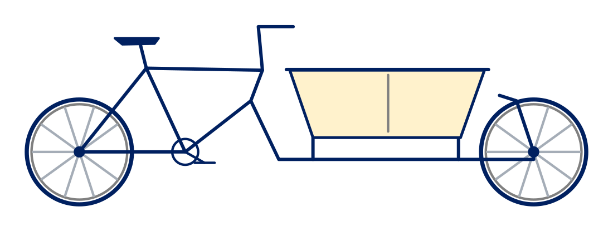

All in One View
Content from Introduction to ontologies
Last updated on 2026-11-18 | Edit this page
Overview
Questions
- What is an ontology, and how does it make the meaning of research data explicit?
- How does an ontology compare with controlled vocabularies, taxonomies and thesauri?
- How does OWL support exchanging ontologies and inferring additional statements?
- How does OWL reasoning handle missing information and identifiers that may refer to the same thing?
Objectives
By the end of this chapter, you will be able to:
- Explain how an ontology makes the meaning of research data explicit.
- Compare ontologies with controlled vocabularies, taxonomies and thesauri for a research task.
- Explain how OWL supports exchanging ontologies and inferring additional statements.
- Explain how OWL reasoning handles missing information and identifiers that may refer to the same thing.
What are ontologies for?
Making the meaning of research data explicit can help researchers describe, publish, find, integrate and reuse it. This includes recording domain knowledge independently of individual applications: what the data represents and how the things it describes relate to each other.
In this training, we use the following definition: “An ontology is a formal, explicit specification of a shared conceptualisation” (Studer et al., 1998).
A conceptualisation is a model of the things and relationships relevant to a domain, or area of interest. Shared means agreed by a community. The terms and assumptions are stated explicitly, in a formal language that applications can interpret.
When researchers describe their data with an ontology, others can inspect the model’s assumptions and assess whether the data fits their own work. Shared definitions also let researchers interpret data consistently across projects. This supports standardisation and interoperability, the “I” in FAIR: Findable, Accessible, Interoperable and Reusable data (Wilkinson et al., 2016).
Models from different fields can be connected where their concepts overlap. These links help researchers investigate questions that span multiple disciplines (Berners-Lee, 2004).
Related approaches
| Approach | What it provides |
|---|---|
| Glossary | Explanations of the meanings of terms |
| Data dictionary | Descriptions of dataset fields, including their meanings, data types and permitted values |
| Controlled vocabulary | Agreed terms or concepts for consistent description and indexing |
| Taxonomy | Concepts organised in a hierarchy of broader and narrower categories |
| Thesaurus | Hierarchical and associative relationships between concepts, with preferred and alternative labels |
| Ontology | Classes (kinds of things), properties (attributes and relationships), and formal statements describing them |
These approaches are not mutually exclusive. For example, taxonomies and thesauri are forms of controlled vocabulary (Isaac & Summers, 2009). And an ontology typically organises its classes in a taxonomic hierarchy (Noy & McGuinness, 2001; W3C OWL Working Group, 2012).
Choose the level of modelling that serves your research: a data dictionary or controlled vocabulary may be enough. An ontology is useful when you need a shared model of the things your data describes, their relationships and the logical statements that support interpretation or inference. Weigh these benefits against the work needed to agree, document and maintain the model (Noy & McGuinness, 2001; Lóscio et al., 2017).
Why OWL?
Ontologies can be represented in different ways. This training focuses on OWL 2 (Web Ontology Language), an open standard from the World Wide Web Consortium (W3C) for representing ontologies on the Web. OWL gives applications a shared language for exchanging and interpreting ontologies. Applications can use an OWL ontology to infer additional facts and check for logical inconsistencies (W3C OWL Working Group, 2012).
OWL builds on RDF, the Resource Description Framework, which is also an open W3C standard and expresses information as statements about things and their relationships. Every OWL 2 ontology has a standard RDF representation, so the model can be shared and queried with the same technologies as the data (W3C, 2012).
The bicycle example
We will use a bicycle inventory as a running example throughout the training.
B001 is our fictional blue cargo bicycle, or bakfiets in Dutch. It has two wheels, a cargo box and a steel frame (F001). Cargo bicycles are designed to carry loads in addition to the rider, such as passengers or goods.

To answer a question such as “Which bicycles have steel frames?”, we need to record which bicycle has which frame and the frame’s material. An ontology can define bicycles, frames and their properties and relationships in a shared model, so different inventories can describe them consistently.
For example, Bicycle and Frame are classes, “has component” is a property, and “Every Bicycle is a Vehicle” is a logical statement. If B001 is recorded as a Bicycle, an application can also infer that it is a Vehicle (W3C OWL Working Group, 2012).
Open-world assumption and identity
Research groups often describe different aspects of the same things and choose identifiers independently.
OWL reasoning derives conclusions that follow logically from the ontology and its data. It follows the open-world assumption and makes no unique-name assumption (W3C OWL Working Group, 2012).
Working with incomplete information
OWL makes the open-world assumption (OWA): a statement can be true even when it has not been recorded or inferred. An inventory might describe F001 without recording its material. That omission does not imply that the frame is not steel; our inventory can supply the missing material. This lets research groups contribute complementary descriptions and extend their knowledge as new findings become available (W3C OWL Working Group, 2012; Distributed descriptions in OWL).
Linking different identifiers
OWL makes no unique-name assumption: different identifiers may refer to the same thing. Another inventory might identify our bicycle as C17. The identifiers B001 and C17 alone do not establish whether they refer to one bicycle or two. This can be stated explicitly or inferred from other statements. Once both identifiers are known to refer to the same bicycle, an application can use OWL reasoning to combine information recorded under either identifier. Research groups can therefore connect their descriptions while retaining their own identifiers (W3C OWL Working Group, 2012).
Links to the relevant W3C standards and guides are collected on the Reference page.
Key Points
- An ontology is a formal, explicit specification of a shared conceptualisation: it makes domain knowledge explicit, independently of any one application.
- Ontologies sit alongside glossaries, data dictionaries, controlled vocabularies, taxonomies and thesauri; choose the level of modelling that serves your research.
- OWL 2 is a W3C standard for representing ontologies that builds on RDF, supports exchange between applications and lets a reasoner infer additional facts and check consistency.
- OWL reasoning follows the open-world assumption (absence of a statement does not mean it is false) and makes no unique-name assumption (different identifiers may denote the same thing).
- A bicycle inventory (B001, its frame F001) is used as a running example throughout the training.
Content from Linked data foundations
Last updated on 2026-11-18 | Edit this page
Overview
Questions
- What is Linked Data, and how does RDF express it as statements about resources?
- What are the subject, predicate and object of an RDF statement, and what does it record?
- How do you interpret a Turtle example by expanding prefixed names to full IRIs and identifying literal values?
- What requirement does a simple SHACL shape express, and does an example graph meet it?
- What is needed to publish RDF as Linked Data?
- Which statements does a basic SPARQL query match, and why does it return its result?
- How can Linked Data support FAIR research data?
Objectives
By the end of this chapter, you will be able to:
- Explain how Linked Data connects research data across datasets and applications.
- Identify the subject, predicate and object of an RDF statement and explain what it records.
- Interpret a simple Turtle example by expanding prefixed names to full IRIs and identifying literal values.
- Explain the requirement expressed by a simple SHACL shape and whether an example graph meets it.
- Describe what is needed to publish RDF as Linked Data.
- Explain which statements a basic SPARQL query matches and why it returns its result.
- Explain how Linked Data can support FAIR research data.
What is Linked Data?
Linked Data is an approach to publishing structured data on the Web so that people and applications can find related information by following links.
The approach follows four Linked Data principles:
- Use Web identifiers to name things.
- Use HTTP or HTTPS identifiers that people and applications can look up.
- When an identifier is looked up, provide useful descriptions using the Resource Description Framework (RDF).
- Include links to other identifiers, so related information can be discovered.
Linked Data can be access-controlled. Linked Open Data is openly accessible under an open licence.
RDF: the data model for Linked Data
Linked Data uses RDF, a W3C standard data model, to express descriptions and links as statements about resources: people, objects, documents or concepts. Each statement is a triple with a subject (what is described), a predicate (the property or relationship) and an object (what it relates to, or a value). See the RDF Primer.
In the bicycle inventory, B001 is the bicycle and F001 its frame:
| Subject | Predicate | Object |
|---|---|---|
| B001 | has component | F001 |
| B001 | has colour | “blue” |
| F001 | has material | “steel” |
RDF uses IRIs (Internationalized Resource Identifiers) as
names across datasets. The same IRI identifies the same resource
wherever it appears, including across datasets. Since another inventory
could also have a B001, we use
https://w3id.org/bicycle-ontology/id/B001 for our bicycle
and https://w3id.org/bicycle-ontology/id/F001 for its
frame. Properties and classes have IRIs too. See RDF
IRIs.
From statements to knowledge graphs
A knowledge graph represents things and their relationships in a graph data model (see Hogan et al., Knowledge Graphs). This course covers only knowledge graphs that use RDF and follow Linked Data principles.
An RDF graph is a set of triples. The diagram adds three statements to those in the table: B001 is a Bicycle, F001 is a Frame, and every Bicycle is a Vehicle. In this compact view, boxes labelled with short resource names are nodes connected by labelled arrows. Repeated subject or object IRIs connect statements at the same node.
MERMAID
---
config:
theme: base
themeVariables:
darkMode: false
background: "#ffffff"
lineColor: "#44546a"
textColor: "#182c3e"
primaryTextColor: "#182c3e"
edgeLabelBackground: "#ffffff"
---
block-beta
columns 4
Vehicle["Vehicle"] space:3
space:4
Bicycle["Bicycle"] space:2 Frame["Frame"]
space:4
B001(["<b>B001</b><br/>has colour: "blue""]) space:2 F001(["<b>F001</b><br/>has material: "steel""])
Bicycle -- "subclass of" --> Vehicle
B001 -- "type" --> Bicycle
F001 -- "type" --> Frame
B001 -- "has component" --> F001
classDef resource fill:#edf3fb,stroke:#406b92,color:#182c3e,stroke-width:2px
classDef instance fill:#e8f4ee,stroke:#36705a,color:#183c2d,stroke-width:2px
class Vehicle,Bicycle,Frame resource
class B001,F001 instanceSix RDF statements. Classes have square corners; instances have rounded corners.
Inside B001’s box, “blue” is a text literal: a value in the object position of a triple. A literal’s datatype tells applications how to interpret its written value, for example as text, a number or a date. See RDF literals.
Bicycle is a class representing a kind of thing, shown in a square box. B001 is a particular bicycle, an instance of that class, shown in a rounded box. The type arrow from B001 to Bicycle records this membership. See RDF types.
RDF Schema (RDFS) provides the subclass of relationship between classes. Every instance of Bicycle is also an instance of Vehicle, so B001 also belongs to Vehicle. See RDF subclasses.
An ontology defines classes such as Bicycle and properties such as “has component”, and states that Bicycle is a subclass of Vehicle. The instance data uses the IRIs of these terms to describe B001 and F001. RDF can express both the ontology and the instance data. See Ontology terms in RDF.
RDF is flexible: researchers can extend a graph with new properties and relationships as research needs develop. See the RDF data model.
Using the same IRI for the same resource connects descriptions across
datasets, even when their structures differ. For example, one dataset
can link B001 to F001 while another records F001’s material. When the
graphs are combined, the shared IRI
https://w3id.org/bicycle-ontology/id/F001 connects these
statements at the same node. See Combining
RDF graphs.
http://w3id.org/bicycle-ontology/id/F001 and
https://w3id.org/bicycle-ontology/id/F001 are different
IRIs. A browser may follow a redirect between them. Queries match IRIs
exactly, so using one can miss data recorded with the other. See IRI
comparison and SPARQL
matching.
The data-centric approach
An inventory application and an analysis application can reuse the same bicycle data and the statement that Bicycle is a subclass of Vehicle. This is a data-centric approach: recording domain knowledge in shared data and ontologies so applications can use the same definitions. Managing the data and definitions separately from application code can reduce repeated work to prepare data and maintain its definitions. See the Data-Centric Manifesto and Sharing data and domain models.
Serialisation: Turtle and other formats
Serialisation represents an RDF graph in a format for storage or exchange. Turtle, JSON-LD, RDF/XML and N-Triples are RDF serialisation formats: they can represent the same graph using different syntax. See RDF serialisation formats.
We use Turtle for the course examples because its compact syntax makes RDF statements easier to read, edit and check. If an application or publishing workflow supports only RDF/XML, use that format. See the Turtle specification.
For the bicycle graph, prefixes abbreviate IRIs:
id:B001 expands to
https://w3id.org/bicycle-ontology/id/B001. Here,
def: abbreviates class and property IRIs, id:
individual IRIs and rdfs: RDF Schema terms, so
def:Bicycle expands to
https://w3id.org/bicycle-ontology/def/Bicycle. See RDF Turtle.
The @prefix declarations below define these
abbreviations; the remaining lines express the graph’s six
statements.
As a predicate, a is Turtle shorthand for the
type relationship shown in the diagram (the RDF property
rdf:type). A semicolon continues statements about the same
subject; a full stop ends the block. Triple order does not change the
graph.
The colour and material names use @en to identify their
language as English.
@prefix def: <https://w3id.org/bicycle-ontology/def/> .
@prefix id: <https://w3id.org/bicycle-ontology/id/> .
@prefix rdfs: <http://www.w3.org/2000/01/rdf-schema#> .
id:B001 a def:Bicycle ;
def:hasComponent id:F001 ;
def:hasColour "blue"@en .
id:F001 a def:Frame ;
def:hasMaterial "steel"@en .
def:Bicycle rdfs:subClassOf def:Vehicle .If we recorded that B001 has two wheels, 2 would
represent an integer that applications can use in calculations, while
"2" would represent a text string.
Validate RDF with SHACL
SHACL (Shapes Constraint Language) is a W3C standard for validating RDF graphs against chosen requirements, expressed as shapes. Shapes are themselves RDF. A validator takes the graph to check (the data graph) and a shapes graph, and produces a validation report. See the SHACL specification.
For an inventory review that needs recorded materials, we can require
each Frame to have at least one hasMaterial value. This
property shape expresses that requirement. The sh:
prefix names SHACL terms; shape: names our example
shape:
@prefix def: <https://w3id.org/bicycle-ontology/def/> .
@prefix sh: <http://www.w3.org/ns/shacl#> .
@prefix shape: <https://w3id.org/bicycle-ontology/shape/> .
shape:FrameMaterial a sh:PropertyShape ;
sh:targetClass def:Frame ;
sh:path def:hasMaterial ;
sh:minCount 1 .sh:targetClass selects Frame instances,
sh:path names the property to check and
sh:minCount 1 requires at least one recorded value. See property shapes
and minimum
count.
The bicycle graph above conforms: F001 has a recorded material. If
its material statement were removed, the report would identify F001 and
hasMaterial as failing the minimum-count requirement.
The data graph can also be an ontology: a shape could check that its classes have labels. SHACL can therefore check chosen requirements for both ontology descriptions and instance data. See data graphs.
Publishing Linked Data
Our Turtle file already expresses RDF. To publish the graph as Linked Data, make its resource IRIs dereferenceable: looking one up retrieves a description of what it identifies. Provide a Web page (a landing page) for people and RDF for applications. The description of B001 can link to F001, whose description gives the frame’s material; links can also lead to other datasets. See Cool URIs.
Class and property IRIs work the same way: def:Bicycle
can lead to its label and relationship to Vehicle. Publish descriptions
for new terms and reuse existing term IRIs exactly, including
http: in the rdfs: namespace. See Publishing
vocabularies and ontologies.
Use persistent identifiers (PIDs), managed to remain usable
when descriptions move to another Web address (Lóscio et al., 2017). For example,
w3id provides stable IRIs under
https://w3id.org/ that redirect to your published
descriptions. If you move those descriptions, update the redirects while
keeping the IRIs unchanged.
Prefer HTTPS for new IRIs and keep the publishing domain’s HTTPS certificate valid for secure access. See HTTPS requirements.
Query RDF with SPARQL
SPARQL is a query language for RDF, whether loaded locally or made available through a service. A query describes a pattern of statements to match and specifies what information to return. The following query searches the bicycle graph above for bicycles with frames recorded as steel. It needs no reasoning.
PREFIX defines the same IRI abbreviation as
@prefix in Turtle. Names beginning with ? are
variables whose values will be found by matching the patterns:
SPARQL
PREFIX def: <https://w3id.org/bicycle-ontology/def/>
SELECT DISTINCT ?bicycle
WHERE {
?bicycle a def:Bicycle ;
def:hasComponent ?frame .
?frame a def:Frame ;
def:hasMaterial "steel"@en .
}The patterns inside WHERE use the familiar Turtle forms
a and ;. The same ?frame in both
patterns connects each bicycle to its frame’s material.
SELECT chooses the variable to return, and
DISTINCT returns each matching bicycle once, even if
several frames match. The result is
https://w3id.org/bicycle-ontology/id/B001; the query
interface may display an abbreviated name. See SPARQL
basic queries.
The material pattern matches the language-tagged value
"steel"@en. "Steel"@en,
"steel"@nl and the untagged string "steel" are
different RDF terms. Consistent source-data preparation and conversion
make these matches reliable.
The Web server can supply RDF descriptions from static files, such as downloadable Turtle files, or retrieve them from a triple store, a database for storing and querying RDF. Researchers can use its query interface; applications can send SPARQL queries over HTTP to its SPARQL endpoint (Hyland et al., 2014).
Options include QLever, Apache Jena Fuseki with TDB and Eclipse RDF4J Server and Workbench. Follow the chosen application’s setup and loading instructions: QLever builds an index from RDF files; Fuseki also offers file uploads.
How Linked Data can support FAIR
The FAIR principles aim to make research data and their descriptions (metadata) Findable, Accessible, Interoperable and Reusable (Wilkinson et al., 2016).
| FAIR goal | How Linked Data contributes |
|---|---|
| Findable | Identifiers and structured metadata help people and applications discover datasets. |
| Accessible | Looking up Web identifiers retrieves descriptions through HTTP(S). |
| Interoperable | RDF, shared terms and explicit relationships help applications combine and interpret data. |
| Reusable | Linked descriptions can record how data were produced and the conditions for reuse. |
FAIR also involves searchable metadata, clear access conditions and a reuse licence.
Key Points
- Linked Data names things with Web identifiers, makes them look-up-able over HTTP(S), returns RDF descriptions, and links to other identifiers.
- RDF represents a graph as triples of subject, predicate and object; the same IRI used in different datasets connects their descriptions at the same node.
- Turtle is a compact RDF serialisation used throughout this course;
@prefixabbreviates IRIs andais shorthand forrdf:type. - SHACL shapes state requirements, such as a minimum count or datatype, that a validator checks against a data graph, producing a validation report.
- Publishing Linked Data means making IRIs dereferenceable, serving both a human-readable landing page and RDF, and using stable, persistent identifiers.
- SPARQL queries match graph patterns written in Turtle-like syntax, using variables to connect statements and return results.
- Linked Data principles directly support the Findable, Accessible, Interoperable and Reusable (FAIR) goals for research data.
Content from Design your own ontology
Last updated on 2026-11-18 | Edit this page
Overview
Questions
- How do you define a research purpose and initial scope for an ontology?
- How do you formulate competency questions and state the expected answers for representative records?
- How do you sketch a conceptual model and use it to describe representative records?
- How do you write labels and definitions that express agreed term meanings, with language tags for the intended languages?
- How do you choose a consistent IRI pattern for the ontology, its terms and the things it describes?
Objectives
By the end of this chapter, you will be able to:
- Define a research purpose and initial scope for an ontology.
- Formulate competency questions and state the expected answers for representative records.
- Sketch a conceptual model and use it to describe representative records.
- Write labels and definitions that express agreed term meanings, with language tags for the intended languages.
- Choose a consistent IRI pattern for the ontology, its terms and the things it describes.
We will design a small ontology for comparing frame materials across bicycle inventories, using representative records and a sketch. You can work with pen and paper.
An iterative workflow
Work in small cycles with the people who collect, interpret and reuse the data:
- Agree the research purpose and initial scope.
- Develop shared terms and definitions, and assess existing ontologies for reuse.
- Build a small model and use it to describe representative records.
- Review the descriptions, answers to relevant questions and inferred conclusions together. Revise the model or address gaps in the data as needed.
- Document decisions, share the model and agree who will maintain it.
Repeat these steps as understanding and research needs develop. Check each revision against the examples already covered. This iterative approach is also described in Ontology Development 101 (Noy & McGuinness, 2001). The optional reading offers further guidance and examples.
Reuse in practice
In practice, check whether existing ontologies or vocabularies can be reused or extended before building your own. Develop new terms for concepts or relationships that suitable existing models do not cover, and combine them with terms you can reuse. Here, we build a small ontology first to understand the modelling choices involved (Noy & McGuinness, 2001).
Define purpose and initial scope
Starting from a research purpose
The purpose explains why we are developing an ontology. It may come from a task researchers want to carry out, such as comparing data from different studies, or from a broader aim to describe research data consistently for future reuse. Discussing these needs with the people who collect and use the data helps establish what the ontology is for (Noy & McGuinness, 2001; Suárez-Figueroa et al., 2009).
A use case makes a particular intended use concrete: who will use the ontology, what they want to do with the data and why. It gives us a starting point for deciding what to represent (Suárez-Figueroa et al., 2009; Uschold & King, 1995).
For the bicycle example, imagine a research team comparing frame materials across several bicycle inventories. They want to find bicycle records with a specified frame material and bring those records together for analysis. A shared model would help them describe the relationship between each bicycle and its frame, and record the frame’s material consistently.
Working with representative records
We will work with a few representative records: examples chosen to show the characteristics and variation the model should cover. We can check whether the model describes the relevant information in each record and whether the same terms work across records.
These fictional inventory records include B001 from the running example and add two bicycles: one with a different frame material and one whose frame material is missing. We can consider each situation as we develop the model:
| Bicycle | Colour | Frame | Frame material |
|---|---|---|---|
| B001 | blue | F001 | steel |
| B002 | red | F002 | aluminium |
| B003 | black | F003 | Not recorded |
“Not recorded” marks a missing value in the table. The Turtle file leaves F003’s material value absent and uses the same classes, properties and prefixes as the earlier graph.
Setting an initial scope
The scope describes what the model covers and in how much detail. Choosing an initial scope helps us concentrate on the information needed for the purpose (Suárez-Figueroa et al., 2009). For our comparison, we start with bicycle frames and their recorded materials.
Other components and their materials, detailed alloy composition, material performance, and manufacturing or maintenance histories are outside this initial scope: we do not need them for the comparison.
A short shared description of the purpose, intended users and scope helps the researchers who know the domain and those who will use the data agree what to include. It can be revised as new needs emerge (Suárez-Figueroa et al., 2009).
Develop competency questions
A competency question states something the ontology, together with relevant data, should help answer. Writing these questions is one way to make the purpose and scope more precise: each question helps identify what the model needs to represent and provides a way to check its coverage (Grüninger & Fox, 1995; Noy & McGuinness, 2001).
Using competency questions
For the frame-material use case, one competency question is:
Which bicycles have a frame recorded as steel?
To support this question, the model needs to represent bicycles, frames, the relationship between them and frame material. This refines our initial scope. The data needs to identify the particular bicycles and frames and record each frame’s material. The expected result is a list of bicycle identifiers.
This wording identifies the relevant component. Asking about “bicycles made of steel” would leave it unclear whether the frame, wheels or another part determines the selection. Recording the intended result alongside the question helps make that requirement precise (Suárez-Figueroa et al., 2009).
Competency questions can also concern information inferred from the model. For example, “Which recorded objects can be classified as vehicles?” can include objects recorded as bicycles when the ontology states that every Bicycle is a Vehicle. We keep this classification from our example (Grüninger & Fox, 1995; W3C OWL Working Group, 2012).
Checking the frame-material question against our representative records can reveal missing data as well as modelling gaps. For F003, recording its material would fill a gap in the data; the model already provides a way to represent it.
Developing questions over time
You can also begin with a use case, representative records or an initial sketch, and develop questions as the intended use becomes clearer. Early modelling can focus on agreeing the important concepts when detailed questions would be too specific. An initial set of questions can be small and grow with discussion (Uschold & King, 1995; Noy & McGuinness, 2001).
For research aimed at future reuse, this means agreeing which main characteristics and relationships to cover while specific research questions are still emerging (Uschold & King, 1995). Here, we retain the bicycle’s colour for broader inventory reuse, although it is not needed to select records by frame material. Linked Data can also support combinations across research fields that the data’s publishers did not anticipate (Berners-Lee, 2004). Competency questions provide examples for checking coverage; they do not need to anticipate every future use.
Agree and sketch the model
With an initial scope and representative records, we can develop a conceptual model: a description of the kinds of things in the domain, their relationships and the data values we want to record about them. A sketch and short written explanations give people something concrete to discuss and revise as they work towards a shared conceptualisation: an agreed understanding of the model’s concepts and relationships (Uschold & King, 1995).
People who know a domain well may still disagree about what a familiar term includes (Neuhaus & Hastings, 2022). People who collect and interpret the data, as well as those who will reuse it, bring different examples and explanations to this discussion. These can reveal distinctions that one modeller might overlook. Involving them helps make different research practices and needs explicit (Hocker et al., 2020).
For example, one colleague might use bicycle only for vehicles powered entirely by the rider, while another includes electric assistance. Discussing a concrete example helps them agree what belongs in the model’s Bicycle class. A possible agreement is to include two-wheeled cycles designed to be pedalled, with or without electric assistance. Keeping the agreed meaning alongside the example makes the decision understandable to others.
Record unresolved points for later discussion (Uschold & King, 1995; Neuhaus & Hastings, 2022).
Classes, properties and data values
The bicycle records give us concrete things to describe. OWL distinguishes the following elements, which we can already use when sketching the model (W3C OWL Working Group, 2012).
| Element | What it represents | Example |
|---|---|---|
| Class | A kind of thing | Bicycle, Vehicle or Frame |
| Individual | A particular thing; an instance of a class | B001 is an instance of Bicycle; F001 is an instance of Frame |
| Object property | A property that represents a relationship between individuals | “has component” links B001 to F001 |
| Datatype property | A property that links an individual to a data value | “has material” links F001 to “steel” |
| Data value | Text, a number or another value, represented by a literal in RDF | “blue” and “steel” are text values |
Bicycle is one class used to describe B001, B002 and B003; each identifier names a particular bicycle. Frame is another class, used for F001, F002 and F003. Keeping classes and individuals distinct lets the same model describe many records.
For this use case, “steel” and “aluminium” are values of the “has material” property. Different recorded materials can be described using the same Frame class. Agree how to write these values across inventories; using “steel” consistently makes records easier to match. A separate class is useful when the model needs to distinguish a kind of thing, rather than simply record a different value (Noy & McGuinness, 2001).
A subclass is a more specific class. Bicycle is a subclass of Vehicle: every instance of Bicycle is also an instance of Vehicle. Frame is a subclass of Component, which covers physical parts of objects. A component relationship has a different meaning. F001 is a component of B001; making Frame a subclass of Bicycle would say that every frame is itself a bicycle (W3C OWL Working Group, 2012).
Sketch the model
The following sketch combines the model with one record so we can see how its parts are used. We use square-cornered boxes for classes and rounded boxes for individuals. These are drawing conventions for this course; other shapes work too, as long as classes and individuals are clearly distinguishable and the arrows have clear meanings.
Read the statements aloud as you sketch, using the terms’ agreed meanings: “B001 has component F001” states the link’s direction, while “every Bicycle is a Vehicle” states a subclass relationship. Discuss these readings with colleagues and revise any statement that expresses a different meaning from the one intended.
- We begin with the classes Bicycle and Frame. Vehicle sits above Bicycle and Component above Frame, with arrows labelled “subclass of”: every bicycle is a vehicle, and every frame is a component.
- Inside the class boxes, we list datatype properties and the kinds of values we plan to record: “has colour: text” in Bicycle and “has material: text” in Frame. The frame’s material belongs with Frame because it describes that component.
- Below the classes, we add the example individuals B001 and F001. Arrows labelled “type” show class membership, as in the RDF graph. B001 links to F001 through “has component”; their recorded values appear inside their boxes. The same property can link a bicycle to its wheels or other parts.
MERMAID
---
config:
theme: base
themeVariables:
darkMode: false
background: "#ffffff"
lineColor: "#44546a"
textColor: "#182c3e"
primaryTextColor: "#182c3e"
edgeLabelBackground: "#ffffff"
---
block-beta
columns 4
Vehicle["Vehicle"] space:2 Component["Component"]
space:4
Bicycle["Bicycle<br/>has colour: text"] space:2 Frame["Frame<br/>has material: text"]
space:4
B001(["<b>B001</b><br/>has colour: "blue""]) space:2 F001(["<b>F001</b><br/>has material: "steel""])
Bicycle -- "subclass of" --> Vehicle
Frame -- "subclass of" --> Component
B001 -- "type" --> Bicycle
F001 -- "type" --> Frame
B001 -- "has component" --> F001
classDef resource fill:#edf3fb,stroke:#406b92,color:#182c3e,stroke-width:2px
classDef instance fill:#e8f4ee,stroke:#36705a,color:#183c2d,stroke-width:2px
class Vehicle,Bicycle,Component,Frame resource
class B001,F001 instanceA conceptual model with the B001 example. Class boxes show the model; rounded boxes show the individuals described by one record.
Domains, ranges and datatypes
A property’s domain specifies a class that all its subjects
belong to; an object property’s range specifies a class that
all its objects belong to. For “has component”, choose Component as the
range to cover frames, wheels and other physical parts. Allow subjects
beyond bicycles, since other objects can also have components. Chapter 4
implements this broad domain with owl:Thing, which contains
every individual (W3C OWL
Working Group, 2012).
These choices also support inference: from “B001 has component F001”, an application using OWL reasoning (a reasoner) can infer that F001 is a Component. Record its more specific Frame membership separately. Checking that every bicycle has a recorded component is a data-validation task.
For datatype properties, choose the kind of value needed: colour and
material names use language-tagged text, such as
"steel"@en. In RDF 1.1, its datatype is
rdf:langString; rdf: abbreviates
http://www.w3.org/1999/02/22-rdf-syntax-ns#. See RDF
literals.
For numbers, use a numeric datatype: xsd:integer
represents whole numbers. The xsd: prefix abbreviates
http://www.w3.org/2001/XMLSchema#. In Turtle,
^^ attaches a datatype: "2"^^xsd:integer is
equivalent to 2. See Turtle literals.
Check the shared sketch against the records
The classes and properties in the sketch should also describe B002 and F002, with their different colour and material values. F003 remains a Frame while its material is unrecorded. Its example box can show the class membership and leave the material value absent.
Comparing two sketches using the same record helps explain the consequences of each choice. For example, writing “has material: steel” inside B001’s box would leave the relevant component unspecified. Keeping F001 as a separate individual makes the frame and its material explicit. When a record exposes a missing distinction, we can revise the sketch (Noy & McGuinness, 2001). Marking changes in another colour can help others follow the revision.
The agreed sketch is most useful alongside short explanations of its concepts and relationships, the reasons for important choices, and any unresolved points. These notes preserve the reasoning behind the model for the people who will use or change it (Uschold & King, 1995).
Labels, definitions and language tags
Clear labels and definitions help other researchers understand and reuse an ontology. Develop and refine labels and definitions together with domain experts as part of the shared conceptualisation, alongside the sketch. Drafting, discussing and refining that wording can take a substantial part of ontology development: it makes the agreed meaning explicit and can reveal differences in understanding that still need to be resolved (Uschold & King, 1995; Neuhaus & Hastings, 2022).
Choose clear labels and definitions
Choose short, recognisable labels using words familiar to the intended users. Use the same naming conventions throughout the model. Here, class labels are singular nouns such as “bicycle” and “frame”; property labels such as “has component” express how they are used in a statement (Noy & McGuinness, 2001).
Write a concise definition for each class and property. A useful class definition starts with a broader kind of thing and states what distinguishes members of the class. Use other, already understood terms to explain the meaning; repeating the label, as in “a bicycle is a type of bicycle”, leaves the reader with the same uncertainty. See textual definitions.
For a property, explain what it relates or records. Read a sample statement aloud with the proposed property label to check its direction and meaning. The following definitions describe one class and one property from our sketch:
| Label | Definition |
|---|---|
| bicycle | A vehicle designed to travel on two wheels arranged one behind the other and to be propelled by pedalling, with or without electric assistance. |
| has component | Relates an object to one of its physical parts. |
The Bicycle definition draws on Merriam-Webster’s entry and reflects our agreed scope, including electric assistance. The property definition tells us how to read the link from B001 to F001. Where a definition is taken or adapted from an existing source, record that source alongside it.
Add language tags
Add a language tag to labels, textual definitions and other
natural-language text, such as material names. In Turtle,
"bicycle"@en is text tagged as English and
"fiets"@nl as Dutch. Both can be used as labels for the
same Bicycle class. Applications can use these tags to select text in a
user’s preferred language. See RDF labels and
language tags.
Choose the languages needed by the intended users. When providing translations, keep the intended meaning consistent across languages.
Choose an IRI strategy
An IRI strategy sets a consistent pattern for creating identifiers. For new IRIs, choose a Web domain that can be maintained over time, use HTTPS and plan how looking them up will retrieve descriptions, as discussed in Linked Data Foundations (Lóscio et al., 2017).
Our example uses:
| Identifies | IRI |
|---|---|
| Ontology | https://w3id.org/bicycle-ontology/ |
| Class | https://w3id.org/bicycle-ontology/def/Bicycle |
| Property | https://w3id.org/bicycle-ontology/def/hasComponent |
| Individual | https://w3id.org/bicycle-ontology/id/B001 |
Here, bicycle-ontology gives the example’s context,
def groups class and property definitions, and
id groups individuals. Appending a local name,
such as Bicycle, to the namespace IRI
https://w3id.org/bicycle-ontology/def/ gives the term IRI
https://w3id.org/bicycle-ontology/def/Bicycle.
In our example, class local names start with an uppercase letter and
property local names with a lowercase letter; subsequent words are
capitalised, as in hasComponent. Choose property local
names that make the direction from subject to object clear:
id:F001 def:hasMaterial "steel"@en . reads as “F001 has
material steel”.
Keep IRIs stable when revising labels or adding translations, and preserve existing IRIs when reusing terms.
Key Points
- Ontology development is iterative: agree purpose and scope, develop terms, build a small model, review it against records and questions, then document and maintain it.
- A competency question states something the ontology and its data should help answer, and records the expected result so coverage can be checked.
- A conceptual sketch distinguishes classes, individuals, object properties and datatype properties, and is best developed and read aloud together with domain experts.
- A property’s domain and range constrain and support inference about its subjects and objects; datatype properties need a suitable datatype, such as language-tagged text.
- Clear labels, concise definitions and consistent language tags make an ontology’s terms understandable and reusable.
- A consistent IRI strategy, using a maintainable HTTPS domain, keeps ontology, term and individual identifiers stable over time.
Content from Build your ontology in OWL
Last updated on 2026-11-18 | Edit this page
Overview
Questions
- How do you implement a conceptual sketch as OWL classes, individuals and properties with suitable domains, ranges and datatypes?
- How do you annotate terms with labels and definitions in the intended languages?
- How do you use a reasoner to identify class memberships that follow from the recorded statements?
- How do the graph views and saved Turtle statements compare with the conceptual sketch?
Objectives
By the end of this chapter, you will be able to:
- Implement a conceptual sketch as OWL classes, individuals and properties with suitable domains, ranges and datatypes.
- Annotate terms with labels and definitions in the intended languages.
- Use a reasoner to identify class memberships that follow from the recorded statements.
- Compare graph views and the saved Turtle statements with the conceptual sketch.
We will describe B001 and its frame F001 in OWL, using the classes and properties from our sketch. We will record that the frame is made of steel and run a reasoner to infer that B001 is a Vehicle.
The walkthrough focuses on the part of our sketch that describes frames and their materials; the expanded reference ontology also includes colour and the other inventory records.
You can write Turtle directly in a text editor or use Protégé or another ontology editor. You can also use AI assistance to draft and revise the ontology.
The walkthrough below uses Protégé as one example. If you prefer a text editor, use the Turtle example at the end of this chapter as a reference.
Get started with Protégé desktop
For the Protégé walkthrough, open Protégé desktop. If you need to install it, follow the installation instructions. The example ontologies were checked with HermiT 1.4.3.456 bundled with Protégé 5.6.7.
Set up IRIs and prefixes
Choose File > New to create an empty ontology. If prompted, open it in a new window.
Open the Active ontology tab. If a tab is missing, enable it through Window > Tabs. See the Protégé interface.
In Ontology header, replace the value in
Ontology IRI with
https://w3id.org/bicycle-ontology/, then click outside the
field. Leave Ontology Version IRI empty. See setting
the ontology IRI.
This is the ontology IRI agreed in our design. A class such as
Bicycle has its own IRI,
https://w3id.org/bicycle-ontology/def/Bicycle; an
individual such as B001 uses
https://w3id.org/bicycle-ontology/id/B001.
In Active ontology, open Ontology
Prefixes and use + beside
Prefixes. Enter def: under Prefix
name and https://w3id.org/bicycle-ontology/def/
under Prefix, then confirm. Add id: in the
same way, using its mapping below. Check the standard prefixes against
the table and add any that are missing.
| Prefix name | Prefix |
|---|---|
def: |
https://w3id.org/bicycle-ontology/def/ |
id: |
https://w3id.org/bicycle-ontology/id/ |
owl: |
http://www.w3.org/2002/07/owl# |
rdf: |
http://www.w3.org/1999/02/22-rdf-syntax-ns# |
rdfs: |
http://www.w3.org/2000/01/rdf-schema# |
Choose View > Render by prefixed name to display
names such as def:Bicycle and id:B001. These
are the names used in the creation dialogs below.
When a creation dialog asks for a Name, enter the
prefixed name, such as def:Bicycle. Protégé expands the
prefix using the mapping you added. Check the IRI shown in the dialog
before confirming: def:Bicycle should produce exactly
https://w3id.org/bicycle-ontology/def/Bicycle. Use
def: for classes and properties and id: for
individuals.
Add a class hierarchy
Open Entities and select Classes. Keep the class hierarchy in Asserted mode while editing. Asserted statements are those we record explicitly.
The hierarchy starts with owl:Thing, the built-in class
containing every individual. Hover over the buttons above the hierarchy
to find Add subclass. For each row below, select the
parent, use Add subclass, enter the new class’s
prefixed name and confirm. See creating
classes.
| Select this parent | Create this class |
|---|---|
owl:Thing |
def:Vehicle |
def:Vehicle |
def:Bicycle |
owl:Thing |
def:Component |
def:Component |
def:Frame |
Select def:Bicycle and check SubClass
Of in its description: it should contain
def:Vehicle. For def:Frame, it should contain
def:Component.
Add individuals and their types
Open Individuals by class and select
def:Bicycle in the class hierarchy. The individuals list
shows members of that class. Use Add Individual, enter
id:B001 as the name and confirm. This creates B001 and
records its membership in Bicycle. See creating
individuals.
Select def:Frame and use the same procedure to create
id:F001 as a Frame.
Check the Types section for each individual: B001
should list def:Bicycle, and F001 should list
def:Frame.
Add properties and values
Read a sample statement aloud when creating each property, such as “B001 has component F001” or “F001 has material steel”, to check its intended direction and meaning.
Create the object property
- In Entities, select Object
properties. Select the built-in root
owl:topObjectPropertyand use Add sub property to createdef:hasComponent. - With
def:hasComponentselected, use + beside Domains (intersection) in its description. Open Class hierarchy, selectowl:Thingand choose OK. - Use + beside Ranges
(intersection). In Class hierarchy, expand
owl:Thingif needed, selectdef:Componentand choose OK.
Using owl:Thing as the domain allows subjects other than
bicycles. With Component as the range, a reasoner can infer from “B001
has component F001” that F001 is a Component. We record B001’s Bicycle
membership separately. See property
domains and ranges.
Create the datatype property
Protégé calls datatype properties Data properties.
- Open Data properties in Entities,
select
owl:topDataPropertyand use Add sub property to createdef:hasMaterial. - In its description, use + beside Domains
(intersection), select
owl:Thingin Class hierarchy and choose OK. - Use + beside Ranges, open
Built in datatypes, select
rdf:langStringand choose OK.
The range rdf:langString is the datatype for
language-tagged text. If we used Bicycle as the domain of
hasMaterial, a reasoner would also classify F001 as a
Bicycle when we record its material. See RDF
literals.
Enter relationships and values
- Return to Individuals by class. Select
def:Bicyclein the class hierarchy, thenid:B001in the individuals list. - Use + beside Object property
assertions. Enter
def:hasComponentas the property andid:F001as the individual, then confirm. This records the link from the bicycle to its frame. - Select
def:Framein the class hierarchy, thenid:F001in the individuals list. - Use + beside Data property
assertions and select
def:hasMaterialin the Data Property panel. Entersteelunder Value andenunder Language Tag, then confirm. Enter the text without Turtle quotation marks; the editor supplies the literal syntax when saving. See property assertions.
Protégé records this as "steel"@en: the name is English
and describes F001’s material, which we want to compare across
inventories.
Add labels and definitions
Add the labels and definitions agreed during conceptual modelling as
annotations on the classes and properties. Use
rdfs:label for labels, rdfs:comment for
definitions and rdfs:seeAlso
to link a term to further information (W3C OWL Working Group,
2012).
| Term | English label | English definition |
|---|---|---|
def:Bicycle |
bicycle | A vehicle designed to travel on two wheels arranged one behind the other and to be propelled by pedalling, with or without electric assistance. |
def:hasComponent |
has component | Relates an object to one of its physical parts. |
For Bicycle:
- Open Entities > Classes, select
def:Bicycleand use + in its Annotations panel. - Choose
rdfs:labelas the annotation property and the Literal tab for its value. - Enter
bicycleunder Value andenunder Language Tag, then confirm. - Add another annotation using
rdfs:comment. Copy the Bicycle definition from the table and set its language tag toen. - Add an
rdfs:seeAlsoannotation linking to the dictionary entry. In the tab for an arbitrary IRI, enterhttps://www.merriam-webster.com/dictionary/bicycleand confirm.
The label appears as "bicycle"@en in Turtle. See adding
annotations.
Open Entities > Object properties, select
def:hasComponent and add its label and definition in the
same way.
Return to Entities > Classes, select
def:Bicycle and add another rdfs:label with
text fiets and language tag nl. Both labels
describe the same class, with the same IRI.
Use language tags for natural-language text throughout the ontology.
Our English material name, labels and definitions use en;
the Dutch label uses nl.
Run the reasoner
Choose Reasoner > HermiT, then Reasoner > Start reasoner. Wait for reasoning to finish. HermiT checks whether the statements contradict one another and infers class memberships from them. After editing the ontology, use Reasoner > Synchronize reasoner to refresh its results. See starting a reasoner.
In Individuals by class, select
def:Bicycle and then id:B001 in the
individuals list. Its Types section lists
def:Bicycle, its most specific class. To find all members
of the broader class def:Vehicle, use DL
Query. See inferred
types in Protégé.
- Open DL Query. If the tab is missing, enable it through Window > Tabs > DL Query.
- Enter
def:Vehiclein the query field, using the same prefixed name shown in Protégé. - Select Instances in the query options and choose Execute.
The results should include id:B001: we recorded it as a
Bicycle, and Bicycle is a subclass of Vehicle. The reasoner therefore
infers that B001 is also a Vehicle. See the DL Query
documentation.
Predict a query result
Before running it, predict: if you run DL Query for
def:Component, with Instances selected,
will id:B001 appear in the results? Will
id:F001?
id:F001 appears; id:B001 does not.
F001 is a Frame, and Frame is a subclass of Component, so the reasoner infers that F001 is a Component. B001 is a Bicycle, not a Frame or any other kind of Component, so it does not belong to Component.
Run the query yourself to check your prediction.
Visualise your ontology
A visual view helps you compare the implemented ontology with your sketch. Choose a view suited to what you want to inspect:
| View | What to use it for | How to open it |
|---|---|---|
| Class hierarchy | Explore subclass relationships, such as Bicycle under Vehicle. Switch between Asserted and Inferred after running the reasoner. | Entities > Classes. Documentation |
| OntoGraf | Explore classes, individuals and their relationships in a graph. Expand relevant nodes and filter relationships to keep the view readable. | Window > Tabs > OntoGraf; bundled with Protégé Desktop. Documentation |
| OWLViz | View asserted and inferred class hierarchies as diagrams. | Window > Tabs > OWLViz; requires a separate Graphviz installation. |
For the bicycle example, keep Vehicle, Bicycle, Component and Frame in view. In OntoGraf, you can also include B001 and F001 to explore their class memberships and component relationship. Inspect F001’s material value in Individuals by class > Data property assertions.
Mermaid renders text descriptions as diagrams of nodes and labelled links. A SPARQL query can generate Mermaid diagram text from selected classes, individuals and relationships in your ontology, which you can then render with Mermaid. The EasyGraph developer manual documents this approach.
Save and inspect the Turtle file
Choose File > Save as. In the format dialog,
select Turtle Syntax and choose OK.
Choose a folder, name the file bike-working.ttl and choose
Save. Use File > Save regularly as
you make changes. Saving the file leaves the ontology IRI as
https://w3id.org/bicycle-ontology/.
Open the saved file in a text editor. The ontology itself is declared
with owl:Ontology. The owl:Class,
owl:ObjectProperty and owl:DatatypeProperty
declarations identify the classes and properties you created. For B001,
owl:NamedIndividual declares an individual with an IRI, and
def:Bicycle records its Bicycle membership.
A comma groups objects with the same subject and predicate, as in
id:B001 a owl:NamedIndividual, def:Bicycle. See Turtle object
lists.
The ontology in Turtle:
@prefix def: <https://w3id.org/bicycle-ontology/def/> .
@prefix id: <https://w3id.org/bicycle-ontology/id/> .
@prefix owl: <http://www.w3.org/2002/07/owl#> .
@prefix rdf: <http://www.w3.org/1999/02/22-rdf-syntax-ns#> .
@prefix rdfs: <http://www.w3.org/2000/01/rdf-schema#> .
<https://w3id.org/bicycle-ontology/> a owl:Ontology .
def:Vehicle a owl:Class .
def:Bicycle a owl:Class ;
rdfs:subClassOf def:Vehicle ;
rdfs:label "bicycle"@en, "fiets"@nl ;
rdfs:comment "A vehicle designed to travel on two wheels arranged one behind the other and to be propelled by pedalling, with or without electric assistance."@en ;
rdfs:seeAlso <https://www.merriam-webster.com/dictionary/bicycle> .
def:Component a owl:Class .
def:Frame a owl:Class ;
rdfs:subClassOf def:Component .
def:hasComponent a owl:ObjectProperty ;
rdfs:label "has component"@en ;
rdfs:comment "Relates an object to one of its physical parts."@en ;
rdfs:domain owl:Thing ;
rdfs:range def:Component .
def:hasMaterial a owl:DatatypeProperty ;
rdfs:domain owl:Thing ;
rdfs:range rdf:langString .
id:B001 a owl:NamedIndividual, def:Bicycle ;
def:hasComponent id:F001 .
id:F001 a owl:NamedIndividual, def:Frame ;
def:hasMaterial "steel"@en .Protégé may use a different order or add declarations. Compare the full IRIs and statements with the example. File > Save stores the statements you entered, including B001’s Bicycle membership. After reopening the file, the reasoner can infer its Vehicle membership again. See saving and exporting inferences.
Keep bike-working.ttl as the starting point for chapter
5; reopen it through File > Open. The complete bicycle ontology is a
reference with the full class, property and datatype definitions and
publication metadata. Its sample
records are kept separately.
Key Points
- A sketch translates directly into OWL: classes, individuals, object
properties (with domain/range) and datatype properties (with a datatype
such as
rdf:langString). -
owl:Thingis the universal class; using it as a broad domain allows the property to apply beyond the bicycle example. -
rdfs:label,rdfs:commentandrdfs:seeAlsoannotate terms with labels, definitions and further information, each taggable by language. - Running a reasoner such as HermiT checks consistency and infers class memberships, such as B001 being a Vehicle because Bicycle is its subclass.
- Class-hierarchy, OntoGraf and OWLViz views let you compare the implemented ontology with the original sketch.
- Saving an ontology as Turtle makes its declarations, annotations and assertions inspectable as plain text.
Content from Logical modelling in OWL
Last updated on 2026-11-18 | Edit this page
Overview
Questions
- How do you define classes using logical expressions and property restrictions?
- What are the consequences of property axioms for relationships and identity?
- How do you use a reasoner to check consistency and class satisfiability?
- Why do particular class memberships follow from the example records while others remain undetermined?
Objectives
By the end of this chapter, you will be able to:
- Define classes using logical expressions and property restrictions.
- Explain the consequences of property axioms for relationships and identity.
- Use a reasoner to check consistency and class satisfiability.
- Explain why particular class memberships follow from the example records and others remain undetermined.
The reasoner already classified B001 as a Vehicle. We now add logical
conditions for recognising bicycles with frames whose material value is
"steel"@en.
This part of the course is split across several episodes:
- Define classes logically introduces axioms, restrictions and necessary/sufficient conditions.
- Property characteristics and identity covers property axioms, characteristics and identity.
- Check your ontology with reasoning covers consistency, satisfiability and inspecting inferences.
- Advanced OWL modelling (optional) covers enumerations, closure, chains, keys and language choices.
- The OWL 2 cheat sheet (reference) provides the syntax reference, including Turtle patterns.
The complete ontology defines the classes, properties and logical statements used in this course. Separate fictional data illustrates components, configuration snapshots, inventory records and mass observations. The smaller walkthrough files remain the starting points for the lessons.
Files and opening instructions
-
bicycle-ontology.ttl: the
complete ontology definitions, version
1.0.0. - bicycle-example-data.ttl: the fictional records and observations. It imports the ontology.
- catalog-v001.xml: maps the imports to local files. Keep it beside the Turtle files so Protégé can load them without a Web request.
Open bicycle-example-data.ttl in Protégé to explore the
records with the ontology. Opening bicycle-ontology.ttl
shows the reusable definitions.
Choose View > Render by prefixed name, then select Reasoner > HermiT and Reasoner > Start reasoner. For the checks below, use DL Query, select Instances and choose Execute. Synchronise the reasoner after edits.
What the model describes
B001–B003 retain their recorded colours, frames and materials. F003’s
material remains unknown. SteelFrame still matches the
exact recorded value "steel"@en; other material values
remain possible. B004 is an additional cargo fatbike showing how those
two classes can overlap.
A Configuration describes one bicycle at one time.
Counts and installed/spare roles apply to that snapshot. C001 records
B001’s frame, two wheels and cargo box; C002 records B002’s frame and
two wheels. Their lists are explicitly closed. The tube inside F001 is
an indirect part of B001 and is not an additional installed component in
C001.
An InventoryRecord keeps an inventory and its local code
together. The compound key identifies records within their inventory.
Different inventory records can describe the same bicycle.
A MassObservation records one measurement, in kilograms,
for one physical object at one time. Repeated measurements use separate
records. The number of distinct numeric values is not a count of
measurement events.
The physical tags in this fictional study are permanently assigned to bicycles. That agreement supports inverse functionality. Storage allocations belong to configuration snapshots.
Construct map
| Constructs | Where to find them |
|---|---|
| Classes, subclassing, individuals and property assertions | Bicycle/Vehicle, Frame/Component and the original inventory records |
| Equivalent classes and intersections | SteelFrame, BicycleWithSteelFrame and CargoFatbike |
| Union and complement | ResearchRecord; NonCargoBicycle |
| Disjoint classes and disjoint union | PhysicalObject/ResearchRecord/Inventory/Organisation; StudyComponent’s Frame, Wheel and CargoBox categories |
| Enumeration and closure | C001/C002’s installed-component lists; the inline cohort example |
Object some, only and
value
|
BicycleWithSteelFrame; AssembledConfiguration; the restriction table |
| Qualified/unqualified object cardinalities | AssembledConfiguration; FourComponentConfiguration |
Inverse expressions and Self
|
BicycleComponent; StoredConfiguration |
| Subproperties, inverse and equivalent object properties | hasFrame/hasComponent/hasPart; isComponentOf; hasInstalledPart |
| Disjoint object properties | Installed, spare and excluded components of one Configuration |
| Functional and inverse-functional properties | describesBicycle and hasAssignedStorageBay; hasInventoryTag |
| Symmetric, transitive and reflexive properties | sharesStorageWith; hasPart/isPartOf; isPartOfOrSelf |
| Asymmetric and irreflexive properties | hasDirectComponent |
| Property chains | recordedIn followed by maintainedBy entails hasInventoryMaintainer |
| Keys | InventoryRecord’s recordedIn plus inventoryCode |
Data some, only, value,
minimum, maximum and exact counts |
StudyMassObservation; SteelFrame; InventoryRecord; MassObservation and recordedAt |
| Data-property hierarchy, equivalence, disjointness and functionality | studyInventoryCode/inventoryCode; recordedMassKg/massKg; inventoryCode/retiredInventoryCode; massKg |
| Named data ranges, intersection and facets | StudyMassKg and StudyMassObservation |
| Identity, difference and negative assertions | B001/C17; tag-based alias; duplicate inventory record; AllDifferent; explicit excluded pairs |
| Anonymous individuals | C003’s unnamed spare frame |
| Punning | Frame as both a class and a TermRecord individual, with independent interpretations |
| Annotation assertions, hierarchy, domain/range, axiom and nested annotations | Labels and definitions; reviewNote; the Frame–Component subclass statement |
| Ontology metadata, versioning and imports | Ontology headers; versioning; the example data’s import and local catalog |
The model illustrates these constructs; the cheat sheet provides further patterns. OWL profiles, semantics and serialisation formats are choices about the language and its use. The datatype inventory lists further supported types; the model uses those needed by its records.
Results to inspect
| Query or statement | Expected result |
|---|---|
def:SteelFrame |
F001 |
def:BicycleWithSteelFrame |
B001 and its aliases C17 and TagAlias001 |
def:Bicycle and not def:BicycleWithSteelFrame |
No instances: B002/B003’s exclusion is not established |
def:FourComponentConfiguration |
C001 |
def:CargoFatbike |
B004 |
def:hasInstalledComponent exactly 3 |
C002 |
def:StoredConfiguration |
C001 |
def:StudyMassObservation |
M001, M002 and M003 |
The reasoner also identifies TagAlias001 with B001 and R001Duplicate with R001. It infers F001 isComponentOf B001, B001 hasPart Tube001, and C002 sharesStorageWith C001. B001 hasComponent Tube001 does not follow: hasComponent is not transitive.
Documentation and publication
Every internally defined class, property and datatype has a definition. Labels use English and Dutch consistently; definitions and notes use English. Machine codes, version strings and typed measurements are not natural-language text.
The model follows the course conventions and the Ask Wol publishing
guide. It uses the https://w3id.org/bicycle-ontology/
namespace; w3id registration is pending. The supplied catalog resolves
imports of the ontology and example data locally.
The counted component properties are kept separate from transitive
parthood. Reflexive parthood-or-self has owl:Thing as
domain and range so it does not classify every individual as a physical
object. These choices follow the OWL
2 DL global restrictions. The key on records follows OWL’s
named-individual key semantics.
Key Points
- Logical modelling adds axioms, restrictions and class expressions on top of the classes, individuals and assertions from the previous chapter.
- This part of the course is split across five episodes: defining classes, property characteristics and identity, reasoning checks, optional advanced constructs, and a reference cheat sheet.
- A complete reference ontology and example dataset illustrate the full range of OWL 2 constructs used across this course.
Content from Define classes logically
Last updated on 2026-11-18 | Edit this page
Overview
Questions
- What are axioms, expressions and restrictions, and how does Manchester syntax express them?
- How do
SubClassOfandEquivalentTodiffer, and what are necessary versus necessary-and-sufficient conditions? - How do you combine and separate classes using disjointness, intersection, union and complement?
- How do object-property restrictions such as
some,onlyandvaluedescribe relationships? - How does cardinality count distinct fillers, and how do qualified and unqualified counts differ?
Objectives
By the end of this chapter, you will be able to:
- Write class axioms using necessary (
SubClassOf) and necessary-and-sufficient (EquivalentTo) conditions. - Use object-property restrictions (
some,only,value) and cardinality to describe relationships. - Use disjointness, intersection, union and complement to combine and separate classes.
- Predict what a reasoner will and will not infer from a given restriction.
We now use class expressions to state conditions for class
membership. Our example defines classes that let a reasoner recognise
frames with the material value "steel"@en and bicycles with
those frames.
For the Protégé steps, open bike-working.ttl from the
preceding chapter and use File > Save as to save a
Turtle copy as bike-logical.ttl. Keep the prefixed-name
display.
Axioms, expressions and restrictions
Our model already contains a subclass statement and B001’s class membership:
def:Bicycle rdfs:subClassOf def:Vehicle .
id:B001 a def:Bicycle .These are axioms: statements the ontology asserts to hold. See OWL building blocks.
We use the prefixes from the previous Turtle example. For readable expressions, we also use Manchester syntax, the notation used in Protégé’s class descriptions and DL Query:
def:hasComponent some def:FrameRead this as “has at least one component that is a Frame”.
some is a keyword; the property and class use our existing
IRIs. Parentheses group expressions. The cheat sheet provides the
corresponding Turtle patterns and links to the specification’s construct
names. See Manchester
syntax.
An expression describes a class, property or range of data
values. def:Frame is a simple class expression. The
expression above is a restriction: it describes individuals
through a property. An axiom can use that expression to describe or
define a class.
Necessary and sufficient conditions
and combines conditions: an individual must satisfy each
one. Data-property restrictions describe individuals through their data
values. For example, def:hasMaterial value "steel"@en
describes individuals with that material value.
Introduce def:SteelFrame for Frames with the material
value "steel"@en. Following the iterative
workflow, we choose an axiom that expresses the agreed meaning and
check its consequences on the example records.
Use SubClassOf to state necessary conditions. In
Entities > Classes, keep Asserted
mode, select owl:Thing and create
def:SteelFrame. With it selected, use +
beside SubClass Of and choose Class expression
editor. Enter only the expression after
SubClassOf: below, then confirm. See editing
class descriptions.
Class: def:SteelFrame
SubClassOf: def:Frame and (def:hasMaterial value "steel"@en)Every SteelFrame must be a Frame and have this material value. These are necessary conditions: asserting that F001 is a SteelFrame lets the reasoner infer both facts, even if its material value has not been entered explicitly. Having those facts alone does not establish SteelFrame membership from this axiom.
Start HermiT, or synchronise it if already running. In DL
Query, enter def:SteelFrame, select
Instances and Execute: F001 should not
appear.
If being a Frame with that material value is also sufficient for
SteelFrame membership, use EquivalentTo. Remove the
expression from SubClass Of and add it under
Equivalent To, again using Class expression
editor. The reasoner can then recognise matching frames:
Class: def:SteelFrame
EquivalentTo: def:Frame and (def:hasMaterial value "steel"@en)This works in both directions. Every SteelFrame satisfies the expression, and every individual satisfying it is a SteelFrame. Together, the conditions are necessary and sufficient. The cheat sheet shows the same definition in Turtle.
Synchronise HermiT and repeat the query: F001 should now appear.
Create def:BicycleWithSteelFrame under
owl:Thing. Under Equivalent To, enter only
the expression after EquivalentTo: below:
Class: def:BicycleWithSteelFrame
EquivalentTo: def:Bicycle and (def:hasComponent some def:SteelFrame)A BicycleWithSteelFrame is a Bicycle with at least one SteelFrame
component. F001 is a Frame with material "steel"@en, so the
reasoner classifies it as a SteelFrame. B001 is a Bicycle with F001 as a
component, so it is a BicycleWithSteelFrame.
Synchronise HermiT and query def:BicycleWithSteelFrame
with Instances selected: B001 should appear. Save
bike-logical.ttl; this working copy contains B001 and
F001.
To inspect all three inventory
records, save the reasoning
definitions (owl2-reasoning.ttl), inventory data and catalog-v001.xml in the same folder.
Open owl2-reasoning.ttl through File >
Open in a new window. It contains both class definitions above
and imports the separate inventory records; the catalog resolves that
import locally. Run HermiT and query
def:BicycleWithSteelFrame: B001 should appear.
B002 has Frame component F002 with the value
"aluminium"@en; B003 has Frame component F003 with no
material recorded. Neither frame is inferred to be a SteelFrame, and
neither is inferred to be outside that class. B002 and B003 likewise
remain unclassified as BicycleWithSteelFrame: other material values or
frames remain possible.
some requires a relationship to exist, even if its
filler is unnamed. Asserting that B003 has some SteelFrame does not
identify F003 as that frame; another frame could satisfy the
condition.
This definition uses an exact text value: "Steel"@en and
"steel"@nl are different values from
"steel"@en.
Combining and separating classes
Use disjointness when shared membership would contradict the model. For example, Frame and Wheel describe separate kinds of component:
def:Frame owl:disjointWith def:Wheel .No individual can then be both a Frame and a Wheel. See class axioms.
Class expressions combine conditions with and,
or and not. For these examples, Wheel groups
wheel components, CargoBicycle describes bicycles designed to carry
extra loads, and Fatbike describes bicycles with unusually wide
tyres.
| Manchester expression | Meaning |
|---|---|
def:CargoBicycle and def:Fatbike |
Individuals in both classes; an intersection |
def:Frame or def:Wheel |
Individuals in either class or both; an inclusive union |
def:Bicycle and not def:CargoBicycle |
Bicycles outside CargoBicycle; uses a complement |
Membership in a union need not establish which alternative holds. A
complement expresses non-membership: absence of CargoBicycle membership
alone does not establish not CargoBicycle.
Classes may overlap: a bicycle can be both a CargoBicycle and a Fatbike.
For the completed reasoning example above, query
def:Bicycle and not def:BicycleWithSteelFrame: no instances
should appear.
Describing relationships with restrictions
An object-property restriction describes individuals through their related individuals, called fillers.
| Manchester expression | What it says about a member |
|---|---|
def:hasComponent some def:Frame |
It has at least one Frame component |
def:hasComponent only def:Frame |
Every component it has is a Frame |
def:hasComponent value id:F001 |
It has the particular component F001 |
only restricts all fillers, including any not yet
recorded. It also holds for an individual with no fillers. To require at
least one Frame and allow only Frames, combine both:
(def:hasComponent some def:Frame) and (def:hasComponent only def:Frame)Suppose B001 also has wheels and a cargo box as components. Using
hasComponent only Frame would require them to be Frames
too. A dedicated def:hasFrame property can express
conditions about its frames alone. See object
restrictions.
Cardinality counts distinct fillers: the individuals related through a property. A qualified cardinality counts only fillers in a specified class:
| Manchester expression | Meaning |
|---|---|
def:hasComponent min 2 def:Wheel |
At least two distinct Wheel components |
def:hasComponent max 2 def:Wheel |
At most two distinct Wheel components |
def:hasComponent exactly 2 def:Wheel |
Both the minimum and maximum conditions |
These can describe an assembled study bicycle in its observation
context. An unqualified restriction, such as
def:hasComponent exactly 2, counts all components: a frame
or cargo box would count towards that total too.
For example, suppose we add Wheel individuals W001 and W002 as B001’s
components. The reasoner can count them as two wheels when it knows they
are different, for example from
id:W001 owl:differentFrom id:W002. A minimum can also
require further, unnamed wheels.
With a maximum of one Frame component for B001, the reasoner treats two Frame fillers as the same individual. Stating that they are different makes the ontology inconsistent. See cardinality restrictions.
For each optional
demonstration below, reopen your saved bike-logical.ttl,
containing B001 and F001, and save a separate Turtle copy. Each
demonstration adds the classes, properties and individuals it needs.
Start HermiT, then synchronise after each change; use DL Query
> Instances for queries. Return to
bike-logical.ttl afterwards.
Restrict B001’s hasFrame links to members of Frame.
- Create the object property
def:hasFrame, leaving its domain and range unset. In Individuals by class, select B001 and use + beside Types, then Class expression editor, to adddef:hasFrame only def:Frame. - Query
def:hasFrame some def:Frame: B001 does not appear.onlyalone establishes no frame’s existence. - Create
id:F004underowl:Thingand add B001’s object property assertiondef:hasFrame id:F004. Querydef:Frame: F004 now appears, although we never asserted its Frame membership. Thesomequery now includes B001 too.
The restriction supplies F004’s classification. It applies to this bicycle’s hasFrame links; other components remain unrestricted by it.
- Create
def:Wheelunder Component, then W001 and W002 as Wheel individuals with theid:prefix. Link B001 to both throughdef:hasComponent. - Query
def:hasComponent min 2 def:Wheel: B001 does not appear yet. Select W001 and add W002 under Different Individuals. Repeat the query: B001 now appears. Two IRIs alone did not establish two distinct wheels. - Add
def:hasComponent max 1 def:Wheelto B001’s Types using Class expression editor. Synchronising now reports an inconsistent ontology: two known-different wheels cannot satisfy this maximum. Remove that last restriction and synchronise to restore consistency.
The two recorded wheels still do not establish
exactly 2: additional wheels remain possible.
Key Points
- Axioms are statements the ontology asserts; expressions describe a class, property or data range, and restrictions describe individuals through a property.
-
SubClassOfstates necessary conditions;EquivalentTostates necessary and sufficient conditions that let a reasoner classify matching individuals automatically. - Disjointness, intersection (
and), union (or) and complement (not) combine and separate classes without requiring named individuals to decide between alternatives. -
some,onlyandvaluedescribe relationships through a property;onlyalone does not assert that any filler exists. - Cardinality (
min,max,exactly) counts distinct fillers; qualified cardinality counts only fillers of a given class, while unqualified cardinality counts all fillers. - Missing information keeps classifications undetermined rather than false, consistent with OWL’s open-world assumption.
Content from Property characteristics and identity
Last updated on 2026-11-18 | Edit this page
Overview
Questions
- How do property axioms such as subproperty and inverse relate properties to one another?
- What do domains and ranges entail for every use of a property?
- What do functional, symmetric and transitive characteristics mean for a reasoner?
- How do
owl:sameAsandowl:differentFromexpress identity and difference?
Objectives
By the end of this chapter, you will be able to:
- Distinguish assertions about particular individuals from axioms that describe a property’s general behaviour.
- Use subproperty, inverse, equivalence and disjointness axioms to relate properties.
- Explain the consequences of functional, symmetric and transitive property characteristics.
- Use
owl:sameAsandowl:differentFromto state identity and difference explicitly.
In the initial OWL walkthrough, we recorded statements such as “B001 is a Bicycle” and “B001 has component F001”. These assertions describe particular individuals through class memberships, relationships and values.
Here, property axioms describe a property’s behaviour across all its
uses. Class restrictions describe conditions on class members. The
following examples are separate modelling choices using the course
prefixes; keep bike-logical.ttl as saved in the preceding
section.
Relationships between properties
Make hasFrame a more specific relationship than hasComponent:
def:hasFrame a owl:ObjectProperty ;
rdfs:subPropertyOf def:hasComponent ;
rdfs:range def:Frame .
id:B001 def:hasFrame id:F001 .This entails B001 hasComponent F001. A general component link alone does not entail the more specific hasFrame link. An inverse axiom supplies the opposite direction:
def:hasComponent owl:inverseOf def:isComponentOf .From B001 hasComponent F001, infer F001 isComponentOf B001. For equivalent properties, a link using either property also holds with the other. Disjoint properties cannot both link the same subject to the same object. Subproperties, equivalence and disjointness also apply to data properties, where the object is a data value. See property axioms.
Domains and ranges apply to every use of a property. With Frame as the range of hasFrame, every object of a hasFrame relationship is inferred to be a Frame. A class restriction such as “every hasFrame value of a Bicycle is a Frame” applies to Bicycle subjects. Several domains or ranges all apply together; the optional union example shows how to express alternatives. See domains and ranges.
Characteristics and identity
| Characteristic | Consequence | Possible relationship |
|---|---|---|
| Functional | Each subject has at most one filler | hasAssignedStorageBay in a fixed allocation |
| Symmetric | A link entails its reverse | sharesStorageWith |
| Transitive | Two consecutive links entail a direct link | isPartOf |
Functionality allows zero fillers. If a functional object property links one subject to two names, both names must identify the same individual. Stating that they differ makes the ontology inconsistent. For a functional data property, distinct values cause inconsistency. Data properties support functionality but none of the other characteristics in this table. See property characteristics.
Identity and difference can also be stated explicitly:
owl:sameAs states that two names identify the same
individual, so class memberships and property assertions about either
name apply to both. owl:differentFrom states difference.
Similarity or matching labels alone justify neither. See assertions.
For changing configurations or repeated measurements, represent the observation context explicitly before imposing functionality or cardinality limits.
Key Points
- Assertions describe particular individuals; property axioms describe a property’s behaviour across all its uses.
- Subproperty, inverse, equivalence and disjointness axioms relate properties to one another and support additional inferences.
- Domains and ranges apply to every use of a property, supporting inference about the classes of subjects and objects.
- Functional, symmetric and transitive characteristics let a reasoner infer identity, reverse relationships or chained relationships.
-
owl:sameAsandowl:differentFromstate identity and difference explicitly; neither follows automatically from similar labels or distinct identifiers. - Represent changing configurations or repeated measurements as explicit observation contexts before relying on functionality or cardinality limits.
Content from Check your ontology with reasoning
Last updated on 2026-11-18 | Edit this page
Overview
Questions
- What does it mean for a reasoner to check consistency and class satisfiability?
- How do you find and interpret unsatisfiable classes in an inferred class hierarchy?
- How do you review and explain an inferred class membership?
- How can inferred assertions be exported for use in a SPARQL query application?
Objectives
By the end of this chapter, you will be able to:
- Explain the difference between a model, entailment, consistency and class satisfiability.
- Use a reasoner to detect inconsistencies and unsatisfiable classes, and locate their cause.
- Compare an inferred class hierarchy and inferred memberships against the intended meaning.
- Export inferred class assertions for use in SPARQL queries.
Use reasoning to check whether the
ontology’s statements can hold together and review their consequences
against the intended meaning. Open owl2-reasoning.ttl with
its separate
inventory data and local catalog in a new Protégé window and start
HermiT. This file contains the steel-frame definitions and imports the
three inventory records. After editing, use Reasoner >
Synchronize reasoner to update the results.
In chapter 3, we used model for our conceptual design. In logic, a model is a possible interpretation in which all the ontology’s axioms hold together. A statement is entailed when it holds in every model. F001 is a SteelFrame in every model. F003 can be a SteelFrame in some models and fall outside that class in others, so its classification remains unresolved. See Direct Semantics.
Check consistency and class satisfiability
A reasoner can also check consistency: whether at least one model exists. Class satisfiability means that a class can have a member in some model.
For example, if Frame and Wheel are disjoint,
Frame and Wheel is unsatisfiable: it must be
empty. The ontology can remain consistent while that class is empty.
Asserting an individual in it makes the ontology inconsistent.
owl:Nothing is the built-in empty class;
owl:Thing contains every individual.
Ranges can also contribute to a contradiction. This separate fragment uses the course prefixes and the Frame/Wheel disjointness introduced earlier:
def:Frame a owl:Class ;
owl:disjointWith def:Wheel .
def:Wheel a owl:Class .
def:hasFrame a owl:ObjectProperty ;
rdfs:range def:Frame .
id:B001 a def:Bicycle ;
def:hasFrame id:W001 .
id:W001 a def:Wheel .The range requires W001 to be a Frame, while its asserted type is
Wheel. Since those classes are disjoint, these statements make the
ontology inconsistent. If W001 is the bicycle’s wheel, correct the
mistaken hasFrame link to hasComponent.
Without the disjointness axiom, membership in both classes would be
allowed. See domains
and ranges.
Resolve inconsistencies before relying on classifications. A reasoner’s explanation can identify axioms responsible for an inference or contradiction; researchers determine which statements match the intended meaning. The wheel-counting demonstration provides another example of a contradiction.
Once the ontology is consistent, open Entities >
Classes and switch the hierarchy to Inferred.
All classes defined in the supplied reasoning example are satisfiable,
so none should be grouped with owl:Nothing. If a named
class appears there in your own ontology, it is unsatisfiable. Select
such a class and click ? beside its inferred
equivalence to owl:Nothing to inspect the responsible
axioms. For classes intended to have members, revise the statements that
conflict with the agreed meaning. See the class
hierarchy and unsatisfiable
classes in Protégé.
Review and explain inferences
Compare the inferred hierarchy with the intended class relationships. The example’s definitions entail that SteelFrame is a subclass of Frame and BicycleWithSteelFrame a subclass of Bicycle. Also review inferred memberships: F001 is a SteelFrame and B001 a BicycleWithSteelFrame. A consistent ontology can still express an unintended meaning, so check these results against the agreed model.
In Protégé, open Individuals by class, select Frame and then F001. Beside its inferred SteelFrame type, click ? (Explain inference). The explanation should connect F001’s Frame membership and material value with the SteelFrame definition. If inferred types are hidden, enable their display in the reasoner preferences.
OWL reasoning is monotonic: adding axioms preserves earlier entailments. Correcting a mistaken axiom requires removing or replacing it and reasoning again. Choose a reasoner that supports the ontology’s features and datatypes; a timeout or unsupported construct can leave an inference unresolved. See inference problems.
Checks such as “every record must contain a material value” concern data completeness and belong in a validation layer, such as SHACL. Calculations belong in applications or queries.
Export inferred assertions (optional)
To use inferred memberships in a query application, run HermiT on the
supplied reasoning example, choose File > Export inferred
axioms as ontology and select class assertions. Load the
exported assertions into a triple store or open the export in a separate
Protégé window. The SPARQL pattern
?bicycle a def:BicycleWithSteelFrame can then retrieve B001
when that assertion is included. Starting HermiT alone does not add its
conclusions to Protégé’s standard SPARQL Query tab. See
exporting
inferences.
Key Points
- A model is a possible interpretation in which all axioms hold; a statement is entailed when it holds in every model.
- Consistency means at least one model exists; class satisfiability means a class can have a member in some model, even in a consistent ontology.
- Disjointness and conflicting domain/range statements are common causes of unsatisfiable classes or inconsistency; a reasoner’s explanation helps locate the responsible axioms.
- Compare the inferred class hierarchy and inferred memberships against the intended meaning: a consistent ontology can still express something unintended.
- OWL reasoning is monotonic; correcting a mistake requires removing or replacing the responsible axiom and re-running the reasoner.
- Exporting inferred class assertions makes them available to SPARQL queries, which otherwise match only asserted statements.
Content from Advanced OWL modelling (optional)
Last updated on 2026-11-18 | Edit this page
Overview
Questions
- How do enumerations, disjoint unions and closure axioms set a local boundary on class membership?
- What do inverse and
Selfrestrictions express, and how do data ranges describe data values? - What further property characteristics, chains and keys are available beyond those already introduced?
- How do OWL 2 DL’s modelling restrictions, profiles and serialisation formats differ?
Objectives
By the end of this page, you will be able to:
- Predict inferences and contradictions from the advanced modelling examples.
- Distinguish OWL 2 DL’s modelling restrictions, OWL profiles and formats for writing ontologies.
These topics build on class restrictions and property axioms. The examples illustrate separate modelling choices; the reasoning example contains the steel-frame definitions and imports the separate bicycle/frame records. Expressions use Manchester syntax; Turtle blocks are fragments using the course prefixes.
Enumerations and disjoint unions
An enumeration fixes a class’s members to the individuals denoted by
the listed names. For a study-specific class, study:
abbreviates
https://w3id.org/bicycle-ontology/study/def/:
Class: study:CohortBicycle
SubClassOf: def:Bicycle
EquivalentTo: {id:B001, id:B002, id:B003}This cohort contains B001, B002 and B003; known aliases denote members too. Another member must be identical to one of those individuals. The names alone do not establish three distinct bicycles. See class expressions.
A single-individual enumeration, such as {id:B001}, is a
nominal.
A disjoint union makes its alternatives exhaustive and mutually exclusive. In the complete example, StudyComponent is the disjoint union of Frame, Wheel and CargoBox: these are exactly its three categories. The broader Component class also accommodates other kinds of part, so that partition would not suit it. See class axioms.
Closure axioms
A closure axiom records a local boundary. Suppose W001 and
W002 are all B001’s wheel fillers, using a new object property
def:hasWheel:
Individual: id:B001
Types: def:hasWheel only {id:W001, id:W002}
Facts: def:hasWheel id:W001, def:hasWheel id:W002Every wheel filler must be one of those individuals. The facts supply
the links; the restriction excludes additional, different fillers. State
id:W001 owl:differentFrom id:W002 . to require two distinct
wheels. def:hasComponent max 0 def:CargoBox similarly
excludes any CargoBox component; missing cargo-box links alone do not
establish it.
Inverse and self restrictions
An inverse expression follows a relationship backwards:
inverse def:hasComponent some def:Bicycle describes
components of a Bicycle. It needs no separately named inverse
property.
def:sharesStorageWith Self describes individuals related
to themselves by sharesStorageWith, if the study defines that
relationship to include self-sharing. This local Self condition differs
from declaring a property reflexive, which requires self-links for every
individual. See inverse
expressions and Self
restrictions.
Describing data values
Data-property restrictions use the same some,
only, value, min,
max and exactly patterns, with data values and
data ranges in place of individuals and classes.
For these examples, introduce def:massKg for decimal
mass measurements in kilograms within the study’s observation context.
The xsd: prefix abbreviates
http://www.w3.org/2001/XMLSchema#.
| Manchester expression | Meaning |
|---|---|
def:massKg some xsd:decimal |
At least one decimal mass value |
def:massKg exactly 1 xsd:decimal |
Exactly one distinct decimal mass value |
def:massKg some xsd:decimal[> 0, <= 100] |
At least one decimal mass value greater than 0 and at most 100 |
The last expression uses facets to narrow a datatype. A
datatype-definition axiom can give a reusable range a name. Data ranges
also support intersection, union, complement and enumeration. For
example, an enumeration can contain exactly "steel"@en and
"aluminium"@en. A complement includes all data values
outside its range, so the complement of positive integers includes
strings too. See data
ranges.
Cardinalities count values, not written forms:
"01"^^xsd:integer and "1"^^xsd:integer denote
one integer. Unqualified data cardinalities count all values. Data
properties have no inverse expressions.
The cheat
sheet lists OWL 2’s supported datatypes and facets. OWL 2’s 2012
datatype map uses rdf:PlainLiteral; RDF 1.1 uses
rdf:langString for language-tagged text. Our
"steel"@en values work in both syntax frameworks. The
course files use the rdf:langString range supported by the
tested Protégé/HermiT combination in chapter 4. See plain literals and
RDF
1.1 literals.
Further property characteristics
These characteristics apply to object properties:
| Characteristic | Consequence | Possible relationship |
|---|---|---|
| Inverse-functional | Each filler has at most one subject | hasAssignedInventoryTag for a physical tag identifying one bicycle |
| Reflexive | Every individual relates to itself | isPartOfOrSelf |
| Irreflexive | No individual relates to itself | isDirectComponentOf |
| Asymmetric | A link excludes its reverse, including self-links | isDirectComponentOf |
Reflexivity applies to every individual, so combining it with a domain can classify every individual in that domain. Irreflexivity alone excludes self-links, without excluding reversed links between different individuals. See property characteristics.
Chains and keys
A property chain derives a relationship from an ordered path. Introduce recordedIn from a bicycle to an inventory, and maintainedBy from an inventory to its maintaining organisation:
def:recordedIn a owl:ObjectProperty .
def:maintainedBy a owl:ObjectProperty .
def:hasInventoryMaintainer a owl:ObjectProperty ;
owl:propertyChainAxiom (def:recordedIn def:maintainedBy) .If B001 is recorded in InventoryA and InventoryA is maintained by TeamA, infer B001 hasInventoryMaintainer TeamA. The reverse implication does not follow. Chains use object properties, including inverse expressions; they cannot traverse material strings. See property chains.
A key specifies identifying properties within a class. In the complete example, an InventoryRecord identifies one bicycle within one inventory. For named records, the named inventory and local code form the key: two records sharing a value for every key property must be the same individual. Different records can describe the same bicycle. Keys allow additional values and require neither existence nor functionality. Use this key only when sharing those values identifies one record. The cheat sheet gives its syntax and precise naming conditions. See keys.
Negative assertions and unnamed individuals
A negative property assertion excludes a particular pair.
For example, inspection could establish that F002 does not have the
material value "steel"@en:
[] a owl:NegativePropertyAssertion ;
owl:sourceIndividual id:F002 ;
owl:assertionProperty def:hasMaterial ;
owl:targetValue "steel"@en .For a negative object-property assertion, use
owl:targetIndividual instead of
owl:targetValue. Missing data supplies neither negative
assertion. Negative class information uses a complement: asserting F002
in not def:SteelFrame excludes its membership. See assertions.
A blank node in an individual position can describe an unnamed
component: id:B004 def:hasComponent [ a def:Frame ].
Blank-node labels are local to their document. Use an IRI when
researchers need to refer to the component across datasets.
Language choices and reasoning boundaries
OWL 2 DL restricts the combinations of axioms to support decidable reasoning under Direct Semantics: an algorithm can finish with the correct answer for the supported reasoning tasks. RDF-Based Semantics interprets OWL directly on RDF graphs; OWL 2 Full allows combinations beyond DL’s restrictions, with undecidable general reasoning. See OWL 2 semantics.
For example, a transitive property cannot be used in an object cardinality restriction in OWL 2 DL. To count direct components while also modelling transitive parts, keep a separate hasDirectComponent property for counts and make it a subproperty of hasPart. The counting property must meet OWL’s simplicity restrictions, which also account for chains and inverses. A profile checker tests the complete combination of axioms, including those of imported ontologies; the cheat sheet summarises the restrictions. See global restrictions.
OWL 2 DL also permits punning: a class and an individual may use the same IRI, with independent interpretations. Describing Frame as a catalogue entry then describes that entry, without applying its properties to every frame. See metamodeling.
OWL 2 provides three restricted profiles for different reasoning needs:
| Profile | Intended setting |
|---|---|
| EL | Large class/property models using features such as intersections and existential descriptions |
| QL | Query rewriting over large instance datasets, including relational databases |
| RL | Rule-based reasoning over RDF data |
Each profile permits particular constructs in particular positions. Check both the ontology’s profile and the application’s support. Turtle, Manchester, Functional Syntax and OWL/XML are writing formats; choosing one does not choose a profile or semantics. See profiles.
The OWL 2 Primer provides further explanations, the Structural Specification defines the language, and the Document Overview maps the companion specifications.
Key Points
- Enumerations and disjoint unions fix a class’s members or alternatives to a closed, listed set; closure axioms set a similar local boundary on a property’s fillers.
- Inverse expressions traverse a relationship backwards without a
named inverse property;
Selfrestrictions differ from declaring a property reflexive. - Data-property restrictions mirror object-property restrictions but operate over data ranges, facets and datatypes instead of classes and individuals.
- Property chains derive a relationship from an ordered path; keys identify class members by shared values across one or more properties.
- Negative property assertions and complements state what does not hold; missing data alone never establishes either.
- OWL 2 DL restricts axiom combinations for decidable reasoning; OWL 2 Full removes those restrictions at the cost of decidability, and EL/QL/RL are further restricted profiles for particular reasoning needs.
Content from OWL 2 cheat sheet (reference)
Last updated on 2026-11-18 | Edit this page
Overview
Questions
- Where can I find a quick reference for OWL 2 class axioms, restrictions, property axioms and assertions?
- What is the Turtle pattern behind a given Manchester-syntax expression?
Objectives
By the end of this page, you will be able to:
- Look up the Manchester syntax and Turtle pattern for a given OWL 2 construct.
- Find the chapter that explains a construct in more depth.
A reference for Logical modelling in OWL, including optional constructs explained in Advanced OWL modelling. Examples use the bicycle model; they illustrate separate modelling choices. Manchester syntax is used for class expressions. Turtle patterns and less common features are collected below.
Short Manchester examples omit def:, writing
Bicycle for def:Bicycle. Individual names keep
id:.
Class axioms and expressions
See necessary and sufficient conditions and class expressions.
| Concept | What it does | Bicycle example |
|---|---|---|
| SubClassOf (⊑) | States a necessary condition; this does not also say that every Vehicle is a Bicycle | Class: Bicycle SubClassOf: Vehicle |
| EquivalentTo (≡) | States necessary and sufficient conditions | Class: SteelFrame EquivalentTo: Frame and (hasMaterial value "steel"@en) |
| Disjoint classes | Excludes shared members | Frame and Wheel are disjoint |
| Covering axiom | Makes a class exactly the union of its alternatives; overlap is allowed | Class: StudyComponent EquivalentTo: Frame or Wheel or CargoBox |
| Disjoint union | Adds pairwise disjointness to a covering axiom | StudyComponent is the disjoint union of Frame, Wheel and CargoBox |
Intersection (and, ⊓) |
Requires both conditions | Frame and (hasMaterial value "steel"@en) |
Union (or, ⊔) |
Requires at least one alternative | Frame or Wheel |
Complement (not, ¬) |
Excludes membership in a class | Bicycle and not CargoBicycle |
Enumeration ({…}) |
Fixes a class’s members to the listed individuals | {id:B001, id:B002, id:B003} |
owl:Thing (⊤) |
Contains every individual | Every Bicycle belongs to Thing |
owl:Nothing (⊥) |
Has no members |
Frame and Wheel is unsatisfiable when those classes are
disjoint |
StudyComponent covers frames, wheels and cargo boxes; the broader Component class also includes other kinds of part.
A union need not determine which alternative holds. A complement needs positive evidence of exclusion. Enumeration alone does not establish that all listed names denote different individuals.
Property restrictions
See object-property restrictions. A filler is an individual at the end of a property relationship.
| Restriction | What it does | Bicycle example |
|---|---|---|
some (∃) |
Requires at least one filler in the specified class | hasComponent some Frame |
only (∀) |
Constrains every filler; allows zero fillers | hasComponent only Frame |
value |
Requires a link to a particular individual | hasComponent value id:F001 |
Self |
Requires a link to the subject itself | sharesStorageWith Self |
min n |
Counts at least n distinct fillers | hasComponent min 2 Wheel |
max n |
Counts at most n distinct fillers | hasComponent max 2 Wheel |
exactly n |
Combines the minimum and maximum | hasComponent exactly 2 Wheel |
| Inverse property | Follows a relationship backwards | inverse hasComponent some Bicycle |
The wheel counts are qualified: they count only Wheel
fillers. hasComponent exactly 2 is unqualified and counts
every component. With a maximum of one, a reasoner can infer that two
filler names refer to the same individual. State known differences with
owl:differentFrom.
A closure such as hasWheel only {id:W001, id:W002}
limits fillers to those two individuals. Add their property assertions
to require those links. The only Frame example above would
be unsuitable for B001’s components, which also include wheels and a
cargo box.
Data properties use the same keywords except Self; their
fillers are data values. For massKg, values represent
kilograms in the study’s observation context:
| Keyword | Data-property example |
|---|---|
some |
massKg some xsd:decimal |
only |
massKg only xsd:decimal |
value |
hasMaterial value "steel"@en |
min |
massKg min 1 xsd:decimal |
max |
massKg max 1 xsd:decimal |
exactly |
massKg exactly 1 xsd:decimal |
Unqualified data cardinalities count all values.
"01"^^xsd:integer and "1"^^xsd:integer count
as one value. Data properties have no inverse expression.
Property axioms
See property axioms.
| Concept | What it does | Bicycle example |
|---|---|---|
| Subproperty | A specific relationship entails a broader one | hasFrame is a subproperty of hasComponent |
| Equivalent properties | A link using either property also holds with the other | Two inventory terms can be declared equivalent when their meanings match |
| Disjoint properties | The two properties cannot both link the same subject to the same object | A component cannot be both installed and spare for one bicycle in the study’s fixed configuration |
| Inverse properties | Reverses the direction of each link | hasComponent / isComponentOf |
| Domain / range | Infers subject and object classes; specifies data ranges | hasFrame has range Frame |
| Functional | Each subject has at most one filler | hasFrame, if the study permits at most one frame per bicycle |
| Inverse-functional | Each filler has at most one subject | A physical inventory tag assigned to one bicycle |
| Reflexive | Every individual relates to itself | isPartOfOrSelf |
| Irreflexive | No individual relates to itself | isDirectComponentOf |
| Symmetric | Each link entails its reverse | sharesStorageWith |
| Asymmetric | Each link excludes its reverse | isDirectComponentOf |
| Transitive | Two consecutive links entail the same relationship | A part of a part is a part |
| Property chain | A specified path entails a relationship | recordedIn followed by maintainedBy entails hasInventoryMaintainer |
| Key | Shared values identify named members of a class | InventoryRecord identified by recordedIn together with inventoryCode |
Data properties also support subproperties, equivalence, disjointness, domain, range and functionality. They link individuals to data values. Other characteristics and chains apply to object properties.
Functionality allows zero fillers. For a functional object property, all fillers for the same subject must be the same individual; distinct data values on a functional data property cause inconsistency. Several domains or ranges all apply, giving an intersection.
For a key, two named class members need a common value for every listed property; shared object-property fillers must also be named. Keys allow additional values and require neither existence nor functionality. See key semantics.
Assertions and reasoning
See assertions and reasoning.
| Concept | What it does | Bicycle example |
|---|---|---|
| Class assertion | Assigns an individual to a class expression | id:B001 a def:Bicycle |
| Object-property assertion | Relates individuals | id:B001 def:hasComponent id:F001 |
| Data-property assertion | Records a value | id:F001 def:hasMaterial "steel"@en |
| Negative property assertion | Excludes a particular object or data-value pair | F002 does not have material "steel"@en
|
| Same / different individuals | States identity / difference | B001 and C17 identify one bicycle; W001 and W002 identify different wheels |
| Anonymous individual | Represents an individual without an IRI | id:B004 def:hasComponent [ a def:Frame ] |
| Classification | Derives the class hierarchy | BicycleWithSteelFrame is a subclass of Bicycle |
| Realisation | Finds an individual’s most specific named classes | B001 is a BicycleWithSteelFrame |
| Entailment | A statement follows in every model | F001’s type and material entail SteelFrame membership |
| Consistency | All axioms can hold together | Distinct fillers contradict an applicable maximum of one |
| Class satisfiability | A class can have a member | Frame and Wheel cannot overlap when disjoint |
A class may be unsatisfiable while the ontology is consistent: it can stay empty. Asserting a member makes the ontology inconsistent. Missing facts establish neither negative assertions nor universal restrictions. Existential requirements can hold without named fillers.
Turtle syntax reference
These are fragments using the existing course prefixes. Prepend this block when copying them into a separate file:
@prefix def: <https://w3id.org/bicycle-ontology/def/> .
@prefix id: <https://w3id.org/bicycle-ontology/id/> .
@prefix owl: <http://www.w3.org/2002/07/owl#> .
@prefix rdf: <http://www.w3.org/1999/02/22-rdf-syntax-ns#> .
@prefix rdfs: <http://www.w3.org/2000/01/rdf-schema#> .
@prefix xsd: <http://www.w3.org/2001/XMLSchema#> .| Expression | Turtle pattern |
|---|---|
| Intersection | [ a owl:Class; owl:intersectionOf (def:Frame def:Wheel) ] |
| Union | [ a owl:Class; owl:unionOf (def:Frame def:Wheel) ] |
| Complement | [ a owl:Class; owl:complementOf def:Frame ] |
| Enumeration | [ a owl:Class; owl:oneOf (id:B001 id:B002) ] |
| Object restriction | [ a owl:Restriction; owl:onProperty def:hasComponent; owl:someValuesFrom def:Frame ] |
| Universal / individual value | Replace owl:someValuesFrom def:Frame with
owl:allValuesFrom def:Frame or
owl:hasValue id:F001
|
| Self | [ a owl:Restriction; owl:onProperty def:sharesStorageWith; owl:hasSelf true ] |
| Qualified object cardinality | [ a owl:Restriction; owl:onProperty def:hasComponent; owl:minQualifiedCardinality "2"^^xsd:nonNegativeInteger; owl:onClass def:Wheel ] |
| Data restriction | [ a owl:Restriction; owl:onProperty def:massKg; owl:someValuesFrom xsd:decimal ] |
| Universal data restriction | Replace owl:someValuesFrom xsd:decimal with
owl:allValuesFrom xsd:decimal
|
| Literal value | [ a owl:Restriction; owl:onProperty def:hasMaterial; owl:hasValue "steel"@en ] |
| Qualified data cardinality | [ a owl:Restriction; owl:onProperty def:massKg; owl:minQualifiedCardinality "1"^^xsd:nonNegativeInteger; owl:onDataRange xsd:decimal ] |
| Inverse expression | [ owl:inverseOf def:hasComponent ] |
For maximum or exact qualified counts, use
owl:maxQualifiedCardinality or
owl:qualifiedCardinality. For unqualified counts, use
owl:minCardinality, owl:maxCardinality or
owl:cardinality and omit owl:onClass /
owl:onDataRange.
| Class axiom | Turtle |
|---|---|
| Subclass | def:Bicycle rdfs:subClassOf def:Vehicle . |
| Equivalence | See SteelFrame in Turtle |
| Disjointness | def:Frame owl:disjointWith def:Wheel . |
| Disjoint union | def:StudyComponent owl:disjointUnionOf (def:Frame def:Wheel def:CargoBox) . |
| Several disjoint classes | [] a owl:AllDisjointClasses; owl:members (def:Frame def:Wheel def:CargoBox) . |
A covering axiom uses owl:equivalentClass with an
owl:unionOf expression.
SteelFrame in Turtle
def:SteelFrame a owl:Class ;
owl:equivalentClass [ a owl:Class ;
owl:intersectionOf (
def:Frame
[ a owl:Restriction ;
owl:onProperty def:hasMaterial ;
owl:hasValue "steel"@en ]
) ] .[] introduces a blank node describing the expression.
( ... ) writes an RDF list: here, the two conditions
combined by owl:intersectionOf. The
owl:equivalentClass statement makes the expression a
definition of SteelFrame. See complex
classes.
| Axiom | Turtle pattern |
|---|---|
| Subproperty | def:hasFrame rdfs:subPropertyOf def:hasComponent . |
| Equivalent / disjoint properties | Use owl:equivalentProperty /
owl:propertyDisjointWith between the properties |
| Several disjoint properties | [] a owl:AllDisjointProperties; owl:members (def:hasInstalledComponent def:hasSpareComponent def:hasExcludedComponent) . |
| Inverse | def:hasComponent owl:inverseOf def:isComponentOf . |
| Domain / range | def:hasFrame rdfs:domain def:Bicycle; rdfs:range def:Frame . |
| Characteristic | def:hasFrame a owl:ObjectProperty, owl:FunctionalProperty . |
| Chain | def:hasInventoryMaintainer owl:propertyChainAxiom (def:recordedIn def:maintainedBy) . |
| Key | def:InventoryRecord owl:hasKey (def:recordedIn def:inventoryCode) . |
| Same / different |
id:B001 owl:sameAs id:C17 . /
id:W001 owl:differentFrom id:W002 .
|
| Several different individuals | [] a owl:AllDifferent; owl:distinctMembers (id:B001 id:B002 id:B003) . |
Other characteristic types are
owl:InverseFunctionalProperty,
owl:ReflexiveProperty,
owl:IrreflexiveProperty,
owl:SymmetricProperty, owl:AsymmetricProperty
and owl:TransitiveProperty. Data properties use the same
subproperty, equivalence, disjointness, domain, range and functional
vocabulary.
Negative assertions use owl:NegativePropertyAssertion
with owl:sourceIndividual,
owl:assertionProperty and either
owl:targetIndividual or owl:targetValue:
[] a owl:NegativePropertyAssertion ;
owl:sourceIndividual id:B001 ;
owl:assertionProperty def:hasComponent ;
owl:targetIndividual id:F002 .
[] a owl:NegativePropertyAssertion ;
owl:sourceIndividual id:F002 ;
owl:assertionProperty def:hasMaterial ;
owl:targetValue "steel"@en .Data ranges and datatypes
See data ranges.
| Range | Turtle pattern |
|---|---|
| Intersection | [ a rdfs:Datatype; owl:intersectionOf (xsd:integer xsd:nonNegativeInteger) ] |
| Union | [ a rdfs:Datatype; owl:unionOf (xsd:integer xsd:string) ] |
| Complement | [ a rdfs:Datatype; owl:datatypeComplementOf xsd:positiveInteger ] |
| Enumeration | [ a rdfs:Datatype; owl:oneOf ("steel"@en "aluminium"@en) ] |
| Facet restriction | [ a rdfs:Datatype; owl:onDatatype xsd:decimal; owl:withRestrictions ([ xsd:minExclusive "0"^^xsd:decimal ]) ] |
A data complement includes all values outside the range, including other kinds of value. Intersect it with a numeric datatype when the intended range is numeric.
A datatype definition names a reusable range. This one contains decimal values greater than 0 and at most 100:
def:StudyMassKg a rdfs:Datatype ;
owl:equivalentClass [ a rdfs:Datatype ;
owl:onDatatype xsd:decimal ;
owl:withRestrictions (
[ xsd:minExclusive "0"^^xsd:decimal ]
[ xsd:maxInclusive "100"^^xsd:decimal ]
) ] .Use built-in datatypes on literals, such as
"23.5"^^xsd:decimal, and as the bases of facet
restrictions. Custom datatypes describe allowed value ranges. Define
each custom datatype once; its definition must not depend on itself,
directly or through other datatypes. Custom datatypes introduce no new
literal forms or facets. Standard data ranges describe one value at a
time. See data
ranges and definitions.
| Group | Datatypes in the 2012 OWL 2 map |
|---|---|
| Real / rational |
owl:real, owl:rational
|
| Decimal / integer |
xsd:decimal, xsd:integer,
xsd:nonNegativeInteger,
xsd:nonPositiveInteger, xsd:positiveInteger,
xsd:negativeInteger
|
| Bounded integer |
xsd:long, xsd:int, xsd:short,
xsd:byte, xsd:unsignedLong,
xsd:unsignedInt, xsd:unsignedShort,
xsd:unsignedByte
|
| Floating-point |
xsd:float, xsd:double
|
| Text |
rdf:PlainLiteral, xsd:string,
xsd:normalizedString, xsd:token,
xsd:language, xsd:Name,
xsd:NCName, xsd:NMTOKEN
|
| Boolean | xsd:boolean |
| Binary |
xsd:hexBinary, xsd:base64Binary
|
| URI value | xsd:anyURI |
| Date-time |
xsd:dateTime, xsd:dateTimeStamp
|
| XML | rdf:XMLLiteral |
rdfs:Literal contains all data values.
owl:real has no direct literal forms. Integers are included
in decimals; floating-point, URI and binary values have their own
identity rules.
| Facets | Apply to |
|---|---|
xsd:minInclusive, xsd:maxInclusive,
xsd:minExclusive, xsd:maxExclusive
|
Numeric and date-time datatypes |
xsd:length, xsd:minLength,
xsd:maxLength
|
Text, binary data and URI values |
xsd:pattern |
Text and URI values |
rdf:langRange |
rdf:PlainLiteral |
Several facet conditions all apply. OWL 2 does not include every XSD
datatype or facet; for example, xsd:date,
xsd:duration, xsd:totalDigits and
xsd:fractionDigits are outside this inventory. Consult the
datatype
map for lexical forms, value identity and facet rules.
The course files use RDF 1.1’s rdf:langString, supported
by the tested Protégé/HermiT combination in chapter 4. OWL 2’s 2012 map
uses rdf:PlainLiteral; the same "steel"@en
notation remains usable. See language-tagged
literals.
Ontology structure and language choices
See entity annotations, documentation, versioning, imports and language choices.
| Entity | Turtle declaration |
|---|---|
| Class | def:Frame a owl:Class . |
| Datatype | def:StudyMassKg a rdfs:Datatype . |
| Object property | def:hasComponent a owl:ObjectProperty . |
| Data property | def:hasMaterial a owl:DatatypeProperty . |
| Annotation property | def:reviewNote a owl:AnnotationProperty . |
| Named individual | id:F001 a owl:NamedIndividual . |
Annotations can describe entities, anonymous individuals, ontologies, axioms or other annotations. Values can be IRIs, literals or anonymous individuals. Under Direct Semantics, annotations and annotation-property axioms do not affect logical entailments.
| Annotation-property axiom | Turtle |
|---|---|
| Assertion | def:Frame rdfs:label "frame"@en . |
| Subproperty | def:reviewNote rdfs:subPropertyOf rdfs:comment . |
| Domain / range | def:reviewNote rdfs:domain owl:Class; rdfs:range xsd:string . |
Axiom annotations use owl:Axiom with
owl:annotatedSource, owl:annotatedProperty and
owl:annotatedTarget, alongside the axiom’s triple. Nested
annotations use owl:Annotation. See annotation
patterns.
Built-in annotation properties: rdfs:label,
rdfs:comment, rdfs:seeAlso,
rdfs:isDefinedBy, owl:deprecated,
owl:versionInfo, owl:priorVersion,
owl:backwardCompatibleWith,
owl:incompatibleWith.
<https://w3id.org/bicycle-ontology/reasoning> a owl:Ontology ;
owl:versionIRI <https://w3id.org/bicycle-ontology/reasoning/1.0> ;
owl:imports <https://w3id.org/bicycle-ontology/> ;
owl:versionInfo "1.0" .The ontology IRI, version IRI and document location can differ. An ontology can omit its IRI. Imports include the imported ontologies’ axioms and their imports; version annotations describe the publisher’s compatibility claims.
| Built-in terms | Meaning |
|---|---|
owl:topObjectProperty /
owl:bottomObjectProperty
|
Every pair of individuals / no pairs |
owl:topDataProperty /
owl:bottomDataProperty
|
Every individual–value pair / no pairs |
OWL 2 DL supports decidable reasoning under Direct Semantics. OWL 2 Full uses RDF-Based Semantics with unrestricted RDF combinations; general complete reasoning is undecidable.
Object cardinalities, Self, functional/inverse-functional/irreflexive/asymmetric characteristics and object-property disjointness require simple properties. Transitive properties, chain superproperties, their inverses and superproperties are non-simple, as are the top and bottom object properties. Chains need a regular hierarchy; controlled recursion, including transitivity, is permitted.
Punning permits separate uses of one IRI, such as class and
individual. It excludes class–datatype overlap and overlap between
property types. Anonymous individuals have restricted tree-like
assertion patterns and cannot occur in object enumerations/value
restrictions, identity/difference axioms or negative property
assertions. owl:topDataProperty can occur only as the
superproperty in data-subproperty axioms. Apply DL checks across
imports. See global
restrictions.
| Profile | Intended setting |
|---|---|
| EL | Large class/property models |
| QL | Query rewriting over large datasets |
| RL | Rule-based reasoning |
Each profile restricts allowed constructs and their positions. Check the ontology and the chosen reasoner’s support. See profiles.
For the specification’s construct names and complete mappings, consult the OWL 2 Quick Reference.
Key Points
- This page is a syntax and construct reference for the Logical Modelling in OWL chapters: class axioms, restrictions, property axioms, assertions and reasoning concepts.
- Each Manchester-syntax construct is paired with its underlying Turtle pattern, for use when writing OWL directly as RDF.
- The full OWL 2 datatype and facet inventory, ontology-header patterns and OWL 2 DL restrictions and profiles are collected here for reference.
Content from Use and evaluate your ontology
Last updated on 2026-11-18 | Edit this page
Overview
Questions
- Which checks suit intended meaning, logical consistency and data requirements?
- How do you transform source records into RDF using an ontology and a supplied mapping?
- How do you compare generated RDF with source records to check identifiers, relationships and values?
- How do you use a SPARQL query to answer a competency question, with and without inferred statements?
- How do you use SHACL shapes to check ontology documentation and instance data?
Objectives
By the end of this chapter, you will be able to:
- Choose checks for intended meaning, logical consistency and data requirements.
- Transform source records into RDF using an ontology and a supplied mapping.
- Compare generated RDF with source records to check identifiers, relationships and values.
- Use a SPARQL query to answer a competency question.
- Compare SPARQL results with the expected answers to a competency question.
- Explain how ontology axioms and the availability of inferred statements affect query results.
- Use SHACL shapes to check ontology documentation and instance data, and interpret the validation reports.
- Use findings to decide what needs revision and repeat the relevant checks.
Our research team wants to compare recorded frame materials across bicycle inventories. We now use the ontology to represent the records as RDF and answer the competency question from chapter 3: “Which bicycles have a frame recorded as steel?”
The supplied inventory RDF lets you follow the checks without running the conversion.
Choose appropriate checks
The following checks apply to both ontologies and instance data:
| Check | What to review | Main explanation |
|---|---|---|
| Reading statements aloud | Whether the statements express the intended meaning, including which thing a value describes and the direction of a relationship | Sketch review and reference RDF |
| OWL reasoning | Logical consistency, class satisfiability and whether inferred conclusions match the intended meaning | Reasoning checks |
| Competency-question tests | Whether queries return the expected answers for chosen records and inference settings | Query tests |
| SHACL validation | Whether selected resources satisfy chosen requirements for recorded values or documentation | SHACL basics |
Transform data into RDF
We will apply the supplied mapping to the three inventory records and inspect the resulting RDF before querying it.
Check the source data
Check data quality before designing the conversion. Look for missing
or duplicate identifiers, incorrect links between records, inconsistent
material names and differences in datatypes or units. For example,
establish whether steel and Steel mean the
same material in the source inventories, and agree a consistent output
value. Preserve the original data and record any changes you make.
For our records, “Not recorded” marks a missing material value. Leave that value absent in RDF, as for F003; this preserves the distinction between a material name and missing information.
Map the source fields
Mapping data to RDF means choosing which resources the records describe and which ontology terms express their types, relationships and values. For the representative records in chapter 3:
| Inventory field | RDF representation |
|---|---|
| Bicycle identifier | Individual IRI, such as id:B001, with type
def:Bicycle
|
| Frame identifier | Individual IRI, such as id:F001, with type
def:Frame
|
| Bicycle’s frame |
def:hasComponent links the bicycle to its frame |
| Frame material |
def:hasMaterial links the frame to language-tagged
text |
| Bicycle colour |
def:hasColour links the bicycle to language-tagged
text |
Use the IRI strategy agreed in chapter 3. Reuse a resource’s IRI when combining descriptions of that same resource. See RDF descriptions and identifiers.
Review the reference RDF
Before running a conversion, write the expected RDF for one source record. For B001, the mapping above gives these five reference triples:
@prefix def: <https://w3id.org/bicycle-ontology/def/> .
@prefix id: <https://w3id.org/bicycle-ontology/id/> .
id:B001 a def:Bicycle ;
def:hasComponent id:F001 ;
def:hasColour "blue"@en .
id:F001 a def:Frame ;
def:hasMaterial "steel"@en .As when reviewing the sketch, read these triples aloud, adding connecting words where needed:
| Triple | Read as |
|---|---|
id:B001 a def:Bicycle . |
B001 is a Bicycle. |
id:B001 def:hasComponent id:F001 . |
B001 has component F001. |
id:B001 def:hasColour "blue"@en . |
B001 has colour blue. |
id:F001 a def:Frame . |
F001 is a Frame. |
id:F001 def:hasMaterial "steel"@en . |
F001 has material steel. |
Follow B001’s component link to F001: the material describes the frame. Review the sentences yourself or with colleagues, and compare their claims with the source record. “F001 has material aluminium” reads naturally but conflicts with this record. Revise the model or mapping if it expresses a different claim from the one intended.
Dean Allemang and Jim Hendler discuss reading triples aloud (p. 39) and avoiding misleading readings through clear labels (p. 310) (Allemang & Hendler, 2011). For complex OWL axioms, read the connected triples together to express the complete logical statement. See the OWL-to-RDF mapping.
Convert the records with RML
We will use RML (RDF Mapping Language), a mapping language with a published specification, to express the mapping as reusable rules. The mapping itself is an RDF graph, written here in Turtle, so you can also inspect its rules with RDF tools and query them with SPARQL. An RML processor applies those rules to the source data.
Download the source CSV and RML mapping into the same folder. The CSV contains the three records from chapter 3; F003’s material cell is empty.
The mapping has two triples maps: one creates bicycles,
their component links and colours; the other creates frames and their
materials. rr:template builds IRIs from identifier columns,
rr:class assigns a type, and rml:reference
reads a column value. Both literal mappings use
rr:language "en". Source spellings are preserved; empty
material cells produce no material statement in this example.
This example was tested with RMLMapper 8.1.0, which requires Java 21 or newer. A JAR file packages a Java application; a terminal lets you run commands by typing them.
- Install Java 21 or newer for your operating system.
- Download RMLMapper’s standalone JAR (the file ending in
-all.jar), rename itrmlmapper.jarand put it beside the CSV and mapping. - Open Terminal on macOS or Linux, or
PowerShell on Windows. Type
java -versionand press Enter. It should report version 21 or newer. If the command is unavailable after installation, close and reopen the terminal.
Use cd to select the folder containing your files.
Replace the example path below with that folder’s full path, keeping the
quotation marks:
Type ls on macOS or Linux, or dir on
Windows, to list the files. You should see rmlmapper.jar,
bicycle-inventory.csv and
bicycle-inventory.rml.ttl. Run the conversion command below
in this same terminal.
The mapping uses the original RML vocabulary, which RMLMapper supports. See the RMLMapper instructions.
Run the mapping on the full CSV:
Choose a method that suits the source format, required transformations and the team’s experience.
| Method | How it applies the mapping |
|---|---|
| Scripts | Use code to prepare source data and create IRIs, literals and triples, with custom logic where needed. |
| RML | Express reusable mapping rules in RDF; an RML processor applies them to sources such as CSV, JSON or XML. |
| SPARQL Anything | Access sources such as CSV, JSON or spreadsheets through an RDF
view, then use a SPARQL CONSTRUCT query to generate
triples. |
These methods can be combined: scripts can clean material names before an RML conversion, run the conversion when records change and load the results into a triple store.
Use consistent IRI patterns, links, datatypes, language tags and rules for missing values across conversion methods.
Check the converted RDF against source records
The output contains 14 record
triples. Open it in a text editor and check the identifiers, component
links, values and language tags against the source records. Read the
generated statements as sentences too. For example, B001 should link to
F001, whose material is "steel"@en; F003 should be recorded
as a Frame with no material value. Review any conversion errors and
unexpected omissions, and keep the source data and mapping so the
process can be repeated when records change.
You can query inventory-data.ttl below. The supplied bicycle inventory contains the
same 14 record triples; the ontology definitions are kept
separately.
When developing or adapting a mapping, test it first on B001 using the reference RDF.
In a separate folder, save those five triples, including the prefix
declarations, as sample-reference.ttl using a text editor.
Put a copy of the CSV, mapping and rmlmapper.jar in that
folder. In this CSV copy, keep only the header and B001 row. Open a
terminal in that folder and run:
Compare sample-generated.ttl with
sample-reference.ttl: check full IRIs, the direction of
links, literal values and language tags. For example,
hasMaterial "steel"@en belongs on F001, the frame. Compare
the record triples only, leaving out class and property declarations.
Prefixes, formatting and triple order can differ while expressing the
same graph. Inspect the sample in Protégé’s individual
views or the graph views from chapter 4, and correct any differences
against the source record.
You can also compare graphs programmatically. For example, Python’s RDFLib graph-comparison utilities can check whether two graphs match and identify differing triples.
Once the sample matches, check records with other materials and missing values before applying the adapted mapping to the full dataset. Keep the reference examples with the source data and mapping for later checks.
Query with SPARQL and test competency questions
Test competency questions against expected answers
Use the frame-material query from Chapter 2 on the converted inventory to test the competency question from Chapter 3. Record the question, query, data and ontology versions, inference settings and expected answers together as a repeatable check of the ontology’s coverage (Noy & McGuinness, 2001; Grüninger & Fox, 1995).
Establish the expected answers from the source records before running the query:
| Bicycle | Recorded frame material | Expected in the steel-frame result |
|---|---|---|
| B001 | steel | Yes |
| B002 | aluminium | No |
| B003 | Not recorded | No matching recorded value |
Load and query the data in Protégé
Use Protégé from Chapter 4 to query the small inventory:
- Choose File > Open and open
inventory-data.ttlor the suppliedbicycle-inventory.ttlin a separate Protégé window, keeping the chapter 5 working ontology separate. - Enable Window > Tabs > SPARQL Query and select the tab. If it is absent from the Tabs menu, install SPARQL Query through File > Check for plugins, restart Protégé and reopen the data file.
- Paste the frame-material query and click Execute. It needs no reasoning. See the Protégé SPARQL plugin.
SPARQL Query is the SPARQL editor; DL Query uses the Manchester expressions introduced in chapter 5.
The result table below the editor should contain only
https://w3id.org/bicycle-ontology/id/B001. Compare the
returned identifiers with the expected set, checking both missing and
unexpected answers. Result order does not matter for this query.
If B001 is missing, inspect the loaded graph, full IRIs, component link and exact material literal, including its language tag. B002 and B003 have no matching steel-frame statements in this graph; B003’s frame material remains unknown. These absences do not establish that the bicycles have no steel frames.
Repeat the comparison after relevant changes, and record the reason for any change to the expected answers.
You can also use SPARQL to generate Mermaid diagram text from selected relationships in your data, as described in Visualise your ontology.
To query the inventory in a triple store introduced in Chapter 2, obtain your team’s dataset and query-editor addresses. For a local installation, follow the setup instructions linked there first.
- Select or create a dataset in a triple store available to your team.
- Load or index
inventory-data.ttlor the suppliedbicycle-inventory.ttlso its statements are available in the dataset’s default graph, which the query searches. - Open the SPARQL query editor, paste the frame-material query and run it.
Querying inferred information
For Protégé, open the reasoning example with its inventory data and catalog, start HermiT and export the inferred class assertions. Open the export in a separate window and use SPARQL Query there. The export records HermiT’s conclusions as assertions for this tab; starting the reasoner alone leaves the tab querying the asserted statements.
For example, with Bicycle declared a subclass of Vehicle, RDFS
reasoning lets ?bicycle a def:Vehicle retrieve B001 from
its Bicycle membership. The frame-material query matches the recorded
statements directly. See SPARQL entailment
regimes.
In a triple store, load the relevant ontology axioms and enable reasoning supported by the store, or load previously inferred statements. Using ontology term IRIs in the data does not load the axioms. Check which RDFS or OWL features the store supports. See RDF4J configuration and Jena inference support.
For the vehicle-classification question from Chapter 3, use the same inventory and run:
SPARQL
PREFIX def: <https://w3id.org/bicycle-ontology/def/>
SELECT DISTINCT ?item
WHERE {
?item a def:Vehicle .
}On the supplied inventory, this query gives no results: it contains no explicit Vehicle memberships. Follow the instructions to export the inferred class assertions and open the export in Protégé, then run the query again. B001, B002 and B003 should now match through the Bicycle-to-Vehicle subclass statement. Compare their full IRIs with the result. A triple store with RDFS inference enabled can produce the same answers. Keep the inference or export settings with the test. See SPARQL entailment regimes.
Apply SHACL checks
Agree the requirements
Extend the material check from
Chapter 2 to the three inventory records. The team also wants
recorded material names to use language-tagged text, so add a datatype
requirement: rdf:langString.
This completeness requirement is a choice for this check. F003 can have a material that has not been recorded; the shape will flag the missing recorded value.
Extend the shape
Download bicycle-shapes.ttl. It
keeps the earlier shape’s target, property and minimum count, and adds
sh:datatype.
Add a short label with sh:name and explain the material
field with sh:description so colleagues can interpret the
shape. See the property
shape documentation.
@prefix def: <https://w3id.org/bicycle-ontology/def/> .
@prefix rdf: <http://www.w3.org/1999/02/22-rdf-syntax-ns#> .
@prefix sh: <http://www.w3.org/ns/shacl#> .
@prefix shape: <https://w3id.org/bicycle-ontology/shape/> .
shape:FrameMaterial a sh:PropertyShape ;
sh:name "Frame material"@en ;
sh:description "Material recorded for a bicycle frame."@en ;
sh:targetClass def:Frame ;
sh:path def:hasMaterial ;
sh:minCount 1 ;
sh:datatype rdf:langString .The shape now checks F001, F002 and F003. The added
sh:datatype rdf:langString requires every recorded material
value to be language-tagged text. See the datatype
constraint.
Run validation and read the report
For these fictional records, use SHACL Play! in a browser:
- Under Input Data, choose Copy/paste RDF content and paste the entire inventory Turtle file, including its prefixes.
- Under Shapes, choose Copy/paste SHACL Rules content and paste the shape above, including its prefixes.
- Under Options, select Avoid resolving targets to disable the application’s extra coverage checks. Leave the other options unchecked, including OWL-Micro inference.
- Choose VALIDATE.
Expect one violation: the focus node (the resource being checked) is
id:F003, the property is def:hasMaterial, and
the constraint is sh:MinCountConstraintComponent,
corresponding to sh:minCount. F003 has no recorded material
value; F001 and F002 satisfy both conditions.
Save the report using its Turtle download link. The
RDF report records sh:conforms false and identifies the
affected node, property and constraint. Keep it with the data and shapes
used for the check. See validation
reports.
Check an ontology requirement
Apply the same method to a documentation requirement: for this check, the Bicycle class must have a label. Use the expanded bicycle ontology as Input Data and replace the shapes with:
@prefix def: <https://w3id.org/bicycle-ontology/def/> .
@prefix rdfs: <http://www.w3.org/2000/01/rdf-schema#> .
@prefix sh: <http://www.w3.org/ns/shacl#> .
@prefix shape: <https://w3id.org/bicycle-ontology/shape/> .
shape:BicycleLabel a sh:PropertyShape ;
sh:name "Bicycle label"@en ;
sh:description "A human-readable name for the Bicycle class."@en ;
sh:targetNode def:Bicycle ;
sh:path rdfs:label ;
sh:minCount 1 .sh:targetNode selects the class resource
def:Bicycle itself; sh:path now identifies its
label property. See node targets.
Keep the same options and validate. The supplied ontology conforms
because Bicycle has labels. Removing both its labels from a copy
produces one minimum-count violation, with focus node
def:Bicycle and property rdfs:label. Review
the label wording with domain experts as well as checking its
presence.
Review findings and repeat the checks
For the inventory, F003’s finding identifies a gap in the source
information that the conversion correctly preserved. Obtain the material
from an appropriate source if possible, and record where it came from.
If missing material is acceptable for the intended use, remove
sh:minCount 1 from a copy of
bicycle-shapes.ttl and rerun validation on the inventory
RDF. It then conforms to the remaining datatype condition. Document why
that requirement changed.
Replacing F001’s "steel"@en with
"aluminium"@en would satisfy both material conditions for
that frame while disagreeing with our source record. The source comparison above and expected
steel-frame answer would expose that difference. Use the findings to
locate the cause in the model, source data, mapping, query or validation
requirements before making changes.
Retain the source data, mapping where used, ontology, queries, expected answers, shapes and reports with their versions or dates. After a revision, repeat the affected checks on the earlier examples as well as any new records. Recheck logical consistency and intended inferences when changing OWL axioms.
Key Points
- Reading statements aloud, OWL reasoning, competency-question tests and SHACL validation are complementary checks for intended meaning, logical consistency and data requirements.
- Writing the expected reference RDF for one record before converting the whole dataset catches mapping errors early.
- RML expresses a reusable, inspectable mapping from source fields (such as CSV columns) to ontology terms; an RML processor applies it to generate RDF.
- A SPARQL query matches asserted statements only, unless inferred statements have been exported or the query is run with reasoning enabled.
- SHACL shapes can check both instance data (for example, a required, typed material value) and ontology documentation (for example, a required label).
- Findings should drive a revision of the model, data, mapping or validation requirements; repeat the affected checks afterwards, including consistency checks after OWL changes.
Content from Publish your ontology
Last updated on 2026-11-18 | Edit this page
Overview
Questions
- How do you prepare an ontology’s metadata and version identifiers for publication?
- How do you assess askwol findings and check generated documentation against the ontology’s RDF?
- How do you publish RDF and documentation using stable Web identifiers?
- How do you check that ontology and term IRIs retrieve the intended RDF and documentation?
Objectives
By the end of this chapter, you will be able to:
- Prepare an ontology’s metadata and version identifiers for publication.
- Assess askwol findings and check generated documentation against the ontology’s RDF.
- Publish RDF and documentation using stable Web identifiers.
- Check that ontology and term IRIs retrieve the intended RDF and documentation.
Our research team can now use the bicycle ontology to compare inventory records. We will prepare it for publication so other researchers can inspect its definitions and reuse its terms.
The askwol publication guide provides the reference explanations and application commands. Here, we apply that guidance to the bicycle ontology and work through one publishing route: GitHub Pages hosts the files, and w3id redirects the identifiers to them.
This course publishes the bicycle
ontology as Turtle alongside its pyLODE
documentation. Both are served by the course’s GitHub Pages site.
The ontology contains definitions only. It uses the
https://w3id.org/bicycle-ontology/ namespace throughout the
course; its w3id registration is pending. The walkthrough below shows
how to prepare your own publication and configure identifier
resolution.
Public deployment in this example requires a GitHub account,
permission to publish a public repository and a project identifier you
intend to maintain. Replace YOUR-OWNER below with the
repository owner’s GitHub username or organisation name, and
YOUR-PROJECT with an available project path chosen using w3id’s
naming guidance.
Metadata and licence
Save a copy of the complete
bicycle ontology as bicycle-ontology.ttl. Its ontology
header already records a title, description, creators, publisher, dates,
licence and version. Use the guide’s metadata and
licence
sections when reviewing these values.
Retain the original attribution and CC BY 4.0 licence for this example. If you adapt it, record your contribution and update the description and modification date to reflect your changes.
Agree any additional project requirements before publication, and use the ontology-validation method to check their presence in the RDF. For example, a project can require an ontology title and a licence IRI. TIB’s draft metadata recommendations provide examples for ontologies and their terms.
If you also publish research data described using your ontology, provide metadata for the dataset and its downloadable files. See the W3C’s guidance on descriptive metadata, which recommends the Data Catalog Vocabulary (DCAT).
Version identifiers
The supplied ontology records version 1.0.0 with
owl:versionInfo. A separate version IRI is optional; the version-specific publication
instructions show how to preserve a release at its own IRI. Use the
guide’s versioning
section as a reference for the OWL
versioning convention.
For your own publication, apply the IRI strategy from chapter 3:
replace https://w3id.org/bicycle-ontology/ with
https://w3id.org/YOUR-PROJECT/ throughout the publication
copy. This updates the ontology IRI and its namespace declarations. The
resulting identifiers include:
| Identifies | IRI |
|---|---|
| Ontology | https://w3id.org/YOUR-PROJECT/ |
| Bicycle class | https://w3id.org/YOUR-PROJECT/def/Bicycle |
| hasComponent property | https://w3id.org/YOUR-PROJECT/def/hasComponent |
The publication copy’s ontology header retains its other metadata and version information:
<https://w3id.org/YOUR-PROJECT/> a owl:Ontology ;
owl:versionInfo "1.0.0" .The owl: prefix is already declared in
bicycle-ontology.ttl. Apply the same namespace replacement
to the queries and shapes used to check this copy.
Before publishing, check that the ontology and term IRIs are spelled correctly and follow your chosen IRI strategy, since users will rely on these identifiers remaining stable. Changing them later can require time-consuming updates to datasets and queries and leave users unsure which IRIs to use. See the W3C’s guidance on identifier persistence and the costs of multiple identifiers for the same resource.
Review with askwol
Open askwol and
upload the prepared bicycle-ontology.ttl to review its
contents before generating documentation. Follow the guide links beside
individual findings as you review the report, and record which findings
you resolve and the reasons for retaining any deliberate modelling or
documentation choices.
The reference ontology provides English and Dutch labels. A language consistency finding on a new term can identify a missing translation.
Because askwol also checks whether namespaces resolve on the Web, a warning for your new namespace is expected until its w3id redirects are live. Investigate findings about existing external vocabularies now, and recheck your new namespace after deployment.
Use the checks from chapter 6 to review changes that affect the model or its use. The guide describes the coverage of askwol’s reasoning checks.
Generate and review documentation
Local generation requires Python 3.12 or newer. Open
a terminal and use cd to select the folder containing
bicycle-ontology.ttl, as in the conversion
setup.
On macOS/Linux, use the environment creation and activation commands in the guide’s setup instructions. On Windows PowerShell, use:
Python’s environment instructions cover activation on other shells and PowerShell execution settings. With the environment activated, install the tested pyLODE version and generate the documentation:
Open index.html in a browser. Locate Bicycle and
hasComponent, and compare their displayed definitions with
the RDF. Check that labels and definitions display correctly and that
the licence, ontology IRI and version information agree with
bicycle-ontology.ttl. Inspect advanced axioms, such as
InventoryRecord’s key, in the Turtle file: pyLODE does not render every
construct. After correcting the RDF, regenerate the page. Check external
term links now and your new term links after publication.
The course’s generated page shows the expected layout for the supplied ontology.
The building walkthrough introduced labels and definitions as entity annotations. Annotations can also document the ontology, individual axioms or other annotations. An axiom annotation can record evidence for a particular subclass statement. A source or review note helps people assess the statement; adding it leaves the class memberships inferred in our example unchanged. See annotations.
The cheat sheet gives the declaration, annotation and ontology-header patterns.
Publish RDF and documentation
Host the files
- On GitHub, create a public repository named
bicycle-ontology, with a README to initialise itsmainbranch. A repository stores the files and their change history. See GitHub’s site creation instructions. - Use Add file > Upload files to upload the
reviewed
bicycle-ontology.ttland generatedindex.htmlto the repository root. Commit the upload to save it. - Create an empty
.nojekyllfile at the repository root. This tells GitHub Pages to skip its default website builder, Jekyll, and publish the HTML already generated by pyLODE. See publishing prepared files. Under Settings > Pages, select Deploy from a branch,mainand /(root), then save. See publishing source.
The repository should contain:
.nojekyll
README.md
index.html
bicycle-ontology.ttlWhen deployment finishes, Settings > Pages > Visit
site opens
https://YOUR-OWNER.github.io/bicycle-ontology/. The
ontology documentation should appear there. Open
https://YOUR-OWNER.github.io/bicycle-ontology/bicycle-ontology.ttl
too, and confirm that both files are available before requesting
redirects. GitHub Pages determines content types from file extensions;
its MIME
type guidance explains how these are assigned.
Connect the identifiers
Follow w3id’s
identifier creation instructions to fork its repository, creating
your own copy in which to propose changes. In that copy, create
ids/YOUR-PROJECT/.htaccess. This file configures the
redirects on w3id. Add the following rules, replacing
YOUR-NAME with the maintainer’s name and
YOUR-USERNAME with their personal GitHub username.
YOUR-OWNER remains the account or organisation that owns
the ontology repository.
APACHE
# Identifier: https://w3id.org/YOUR-PROJECT/
# Maintainer: YOUR-NAME
# GitHub username: YOUR-USERNAME
RewriteEngine On
Header always merge Vary Accept
RewriteCond %{HTTP_ACCEPT} text/turtle [NC]
RewriteRule ^(?:def(?:/[^/]*)?)?$ https://YOUR-OWNER.github.io/bicycle-ontology/bicycle-ontology.ttl [R=303,L]
RewriteRule ^(?:def(?:/[^/]*)?)?$ https://YOUR-OWNER.github.io/bicycle-ontology/ [R=303,L]These rules direct explicit Turtle requests to the RDF and other requests to the documentation. The ontology, namespace and term IRIs select the current files. The guide explains HTTP delivery; w3id documents the redirect rule syntax.
To preserve version 1.0.0 at
https://w3id.org/YOUR-PROJECT/1.0.0:
-
Add
owl:versionIRIto the publication copy’s existing ontology header, keeping its other metadata:<https://w3id.org/YOUR-PROJECT/> a owl:Ontology ; owl:versionIRI <https://w3id.org/YOUR-PROJECT/1.0.0> ; owl:versionInfo "1.0.0" . Regenerate
index.htmland upload both updated root files. Use Add file > Create new file to createreleases/1.0.0/bicycle-ontology.ttl, pasting the reviewed Turtle into it. Createreleases/1.0.0/index.htmlwith the generated HTML in the same way. Confirm that both release URLs are available on GitHub Pages.-
Insert these rules before the current-file rules in your proposed w3id
.htaccess:
The version IRI selects the preserved release; the root files provide
the current publication. Keep the release files unchanged when
publishing a later version. After deployment, check the version IRI with
both Accept headers: expect a 303 redirect to the release’s
Turtle or HTML, followed by 200 with the corresponding
content type. At this first publication, the current and
version-specific RDF should contain the same statements.
Use w3id’s testing
instructions before submitting a pull request, a request for the
maintainers to review and merge your rules. The identifiers become
available after the accepted change is deployed. The
.htaccess belongs in the w3id repository; the ontology and
HTML files remain on GitHub Pages.
Check Web access
Once the redirects are live, open the ontology IRI and Bicycle class IRI in a browser. Each should lead to the documentation. Follow term links on the page and check that you can find the corresponding definitions.
To check RDF access, open a terminal and use curl, a command-line
application for making Web requests. The command is curl on
macOS/Linux and curl.exe in Windows PowerShell. If it is
unavailable, follow curl’s installation guidance.
Replace YOUR-PROJECT before running:
SH
curl -L -D headers.txt -H "Accept: text/turtle" -o retrieved.ttl "https://w3id.org/YOUR-PROJECT/def/Bicycle"-L follows redirects, -D saves response
headers, -H requests Turtle and -o saves the
response body. Open headers.txt and
retrieved.ttl in a text editor. The expected responses
are:
| Requested IRI | Accept header | Redirect destination | Final response |
|---|---|---|---|
/ |
text/html |
bicycle-ontology/ |
200, text/html
|
/ |
text/turtle |
bicycle-ontology/bicycle-ontology.ttl |
200, text/turtle
|
/def/Bicycle |
text/turtle |
bicycle-ontology/bicycle-ontology.ttl |
200, text/turtle
|
/def/hasComponent |
text/turtle |
bicycle-ontology/bicycle-ontology.ttl |
200, text/turtle
|
The request paths above follow
https://w3id.org/YOUR-PROJECT; destinations follow
https://YOUR-OWNER.github.io/. Each listed request should
first receive a 303 redirect. A final content type may
include a character encoding, such as
text/html; charset=utf-8.
Repeat the command for the other paths, using
Accept: text/html and -o retrieved.html for
the HTML check. Load the retrieved Turtle in Protégé and confirm that it
contains the expected ontology IRI, version information, Bicycle’s
definition and hasComponent’s domain and range.
Upload retrieved.ttl to askwol to review the published
RDF, checking that your new namespace now resolves. If a request fails,
use the recorded redirect destination to locate whether the problem is
in the w3id rule or the hosted file. If you correct the RDF, regenerate
its documentation and republish the affected files. Repeat the affected
checks once any file or redirect corrections are deployed.
After the checks pass, share the ontology IRI with the research community and, where suitable, submit it to a relevant vocabulary catalogue.
Key Points
- A publication-ready ontology file has complete metadata (title, description, creators, publisher, dates, licence) and a recorded version in its header.
- askwol review and generated pyLODE documentation should be checked against the underlying RDF; pyLODE does not render every advanced axiom.
- One publishing route hosts the Turtle and HTML files on GitHub Pages
and uses w3id
.htaccessrules to redirect stable identifiers to them, content-negotiated byAcceptheader. - A version IRI can preserve a specific release at its own stable address, alongside the current publication at the main ontology IRI.
- After deployment, check Web access with a tool such as
curl, requesting both Turtle and HTML, and confirm the expected303redirect followed by a200response. - Keep the IRI strategy stable before publishing: changing ontology or term IRIs afterwards is costly for everyone who has reused them.
Content from Maintain your ontology
Last updated on 2026-11-18 | Edit this page
Under development
This chapter has not been written yet.
Key Points
- This chapter has not been written yet. Check the source training repository for updates, or open an issue with suggestions.
Content from Reuse ontologies
Last updated on 2026-11-18 | Edit this page
Under development
This chapter is being written. By the end of it, you will be able to:
- Explain why and when to map an ontology to external ontologies and vocabularies
- Find suitable ontologies and vocabularies, and suitable terms within them, using standard resources
- Compare mapping approaches and choose one that fits, including SHACL-AF rules for deriving RDF triples with terms from another ontology
Reusing existing ontologies and vocabularies, and connecting your ontology to them.
Reuse, extend or build
Before creating a new ontology, check which ontologies your research community uses and which terms the datasets you want to use already refer to. In RDF data, the class and property IRIs can identify those terms. You can reuse suitable terms, extend an existing ontology with missing concepts, or create new terms where existing models do not express the meaning you need. These choices can be combined (Noy & McGuinness, 2001).
When assessing an existing ontology, check:
- Whether its definitions, relationships and logical statements fit your intended meaning and level of detail.
- Whether relevant research communities or collaborating projects use it.
- Whether documentation, a licence and information about maintenance and versions are available.
Read the definitions and logical statements behind a promising term: matching labels alone do not establish a match in meaning (Lóscio et al., 2017; Hyland et al., 2014).
Import an ontology
An owl:imports statement brings another ontology’s
axioms into reasoning, including those of its imports. Using its term
IRIs alone does not import their defining axioms. An import can refer to
a particular version using its version IRI. See ontology
imports.
Key Points
- Check whether existing ontologies or vocabularies can be reused or extended before building new terms; these approaches can be combined.
- Assess a candidate ontology’s fit, community use, documentation, licence and maintenance before reusing its terms.
- Matching labels alone do not establish a match in meaning: read the candidate term’s definitions and logical statements.
-
owl:importsbrings another ontology’s axioms into reasoning; using its term IRIs in your data does not import those axioms by itself. - This chapter is still being written; later versions will cover finding suitable terms and comparing mapping approaches in more depth.
Content from Ontologies beyond RDF
Last updated on 2026-11-18 | Edit this page
Under development
This chapter has not been written yet. By the end of it, you will be able to:
- Recognize when ontology thinking is useful outside the RDF and linked data ecosystem
Using ontologies outside the RDF and linked data universe.
Key Points
- This chapter has not been written yet. Check the source training repository for updates, or open an issue with suggestions.